4. Difference-in-Differences
Mike Nguyen
2026-03-17
c_did.RmdAssumptions
Treatment Variation Plot
library(PanelMatch)
library(fixest)
pd_stagg <- PanelData(
panel.data = fixest::base_stagg |>
mutate(treat = if_else(time_to_treatment < 0, 0, 1)),
unit.id = "id",
time.id = "year",
treatment = "treat",
outcome = "y"
)
DisplayTreatment(
panel.data = pd_stagg,
xlab = "Year",
ylab = "Unit",
hide.y.tick.label = TRUE
)It’s okay to have some units without any observation on the left-hand side (i.e., left-censored).
Pre-treatment Parallel Trends
plot_par_trends
The plot_par_trends function is designed to assist researchers and analysts in visualizing parallel trends in longitudinal datasets, particularly for datasets with treatment and control groups. This tool makes it easy to visualize changes over time for various outcome metrics between the groups.
Data Structure
For optimal use of plot_par_trends, ensure your data is structured in the following manner:
-
entity: A unique identifier for each observation (e.g., individuals, companies). -
time: The time period for the observation. - Treatment status column: Distinguishing treated observations from controls.
- Metric columns: Capturing the outcome measures of interest.
Sample Data Generation
For demonstration purposes, we can generate some illustrative data:
library(dplyr)
library(ggplot2)
data <- expand.grid(entity = 1:100, time = 1:10) %>%
dplyr::arrange(entity, time) %>%
dplyr::mutate(
treatment = ifelse(entity <= 50, "Treated", "Control"),
outcome1 = 0.5 * time + rnorm(n(), 0, 2) + ifelse(treatment == "Treated", 0, 0),
outcome2 = 3 + 0.3 * time + rnorm(n(), 0, 1) + ifelse(treatment == "Treated", 0, 2),
outcome3 = 3 + 0.5 * time * rnorm(n(), 0, 1) + rexp(n(), rate = 1) + ifelse(treatment == "Treated", 0, 2),
outcome4 = time + rnorm(n(), 0, 1) + ifelse(treatment == "Treated", 0, 2) * 2
)
head(data)
#> entity time treatment outcome1 outcome2 outcome3 outcome4
#> 1 1 1 Treated -2.300087 2.963285 3.371155 0.5654913
#> 2 1 2 Treated 1.510634 3.384160 4.619099 1.0015782
#> 3 1 3 Treated -3.374527 4.521132 2.931090 3.1943447
#> 4 1 4 Treated 1.988857 2.915973 3.784315 3.5720560
#> 5 1 5 Treated 3.743105 3.199908 2.922883 4.8883488
#> 6 1 6 Treated 5.296823 4.423231 2.254846 4.0199024
summary(data)
#> entity time treatment outcome1
#> Min. : 1.00 Min. : 1.0 Length:1000 Min. :-3.9073
#> 1st Qu.: 25.75 1st Qu.: 3.0 Class :character 1st Qu.: 0.9742
#> Median : 50.50 Median : 5.5 Mode :character Median : 2.7320
#> Mean : 50.50 Mean : 5.5 Mean : 2.7587
#> 3rd Qu.: 75.25 3rd Qu.: 8.0 3rd Qu.: 4.4386
#> Max. :100.00 Max. :10.0 Max. :10.2979
#> outcome2 outcome3 outcome4
#> Min. : 1.024 Min. :-7.435 Min. :-1.432
#> 1st Qu.: 4.434 1st Qu.: 3.044 1st Qu.: 4.895
#> Median : 5.619 Median : 5.093 Median : 7.428
#> Mean : 5.634 Mean : 5.015 Mean : 7.488
#> 3rd Qu.: 6.807 3rd Qu.: 6.812 3rd Qu.:10.098
#> Max. :10.575 Max. :18.138 Max. :16.668Visualizing Trends with plot_par_trends Invoke the plot_par_trends function using the sample data:
results <- plot_par_trends(
data = data,
metrics_and_names = list(
outcome1 = "Outcome 1",
outcome2 = "Outcome 2",
outcome3 = "Outcome 3",
outcome4 = "Outcome 4"
),
treatment_status_var = "treatment",
time_var = list(time = "Time"),
smoothing_method = "glm",
theme_use = causalverse::ama_theme(base_size = 12)
# title_prefix = "Para Trends"
)Note: This custom function is built based on the geom_smooth function from ggplot2. Therefore, it supports most of the smoothing methods you’d find in ggplot2, such as lm, glm, loess, etc.
The function returns a list of ggplot objects, which can be visualized using tools like gridExtra
library(gridExtra)
gridExtra::grid.arrange(grobs = results, ncol = 2)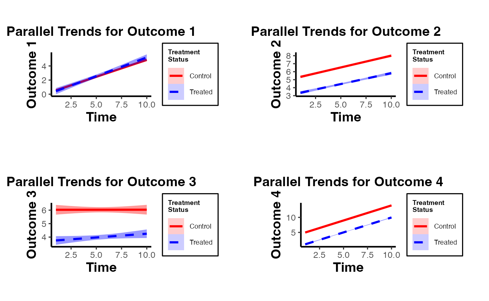
Note of Caution: When using this custom package, it’s crucial to carefully examine parallel trends plots both with and without control variables. At times, one might observe suitable parallel trends without control variables. However, when these control variables are introduced, the underlying assumptions can be disturbed. Conversely, there are cases where the general parallel trends assumption doesn’t seem to be in place, but when conditioned on the control variables, the trends align perfectly. This package provides functions that allow users to easily generate these plots side by side, especially after formulating the predicted values of dependent variables by accounting for control variables. Always approach these plots with a discerning eye to ensure accurate interpretation and application.
In this demonstration, I’ve incorporated the use of the smoothing function to illustrate its potential application. It’s imperative, however, to approach this function with prudence. Although the smoothing function can be invaluable in revealing underlying trends in specific scenarios, its application carries inherent risks. One such risk is the inadvertent or intentional misrepresentation of data, leading observers to falsely deduce the presence of parallel trends where they might not exist. This can potentially skew interpretations and lead to incorrect conclusions.
Given these concerns, if you’re inclined to utilize the smoothing function, it’s paramount to also consider the implications and insights from our secondary plot. This subsequent visualization offers a more granular and statistically sound perspective, specifically focusing on the pre-treatment disparities between the treated and control groups. It serves as a vital counterbalance, ensuring that any trend interpretations are grounded in robust statistical analysis.
plot_coef_par_trends
Arguments
-
data: A data frame containing the data to be used in the model. -
dependent_vars: A named list of dependent variables to model along with their respective labels. -
time_var: The name of the time variable in the data. - (similarly, describe other arguments…)
Output
The function returns a plot or a list of plots visualizing interaction coefficients based on user specifications.
library(fixest)
data("base_did")
# Combined Plot
combined_plot <- plot_coef_par_trends(
data = base_did,
dependent_vars = c(y = "Outcome 1", x1 = "Outcome 2"),
time_var = "period",
unit_treatment_status = "treat",
unit_id_var = "id",
plot_type = "coefplot",
combined_plot = TRUE,
plot_args = list(main = "Interaction coefficients Plot"),
legend_title = "Metrics",
legend_position = "bottomright"
)
#> Notes from the estimations:
#> [x 2] The variable 'period::10:treat' has been removed because of collinearity
#> (see $collin.var).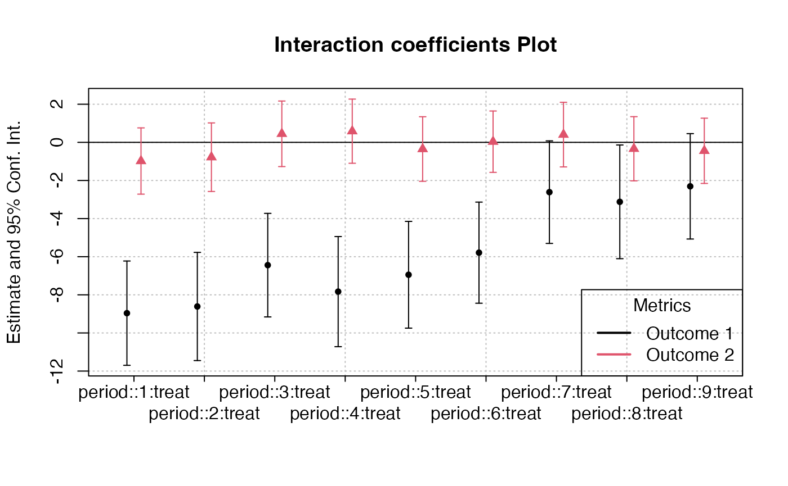
# Individual Plots
indi_plots <- plot_coef_par_trends(
data = fixest::base_did,
dependent_vars = c(y = "Outcome 1", x1 = "Outcome 2"),
time_var = "period",
unit_treatment_status = "treat",
unit_id_var = "id",
plot_type = "coefplot",
combined_plot = FALSE
)
#> The variable 'period::10:treat' has been removed because of collinearity (see
#> $collin.var).
#> The variable 'period::10:treat' has been removed because of collinearity (see
#> $collin.var).
Random Treatment Assignments
In Difference-in-Differences analysis, ensuring randomness in treatment assignment is crucial. This randomization comes in two main levels: random time assignment and random unit assignment.
-
Definition: This pertains to when (in time) a treatment or intervention is introduced, not to which units it’s introduced.
Importance in Staggered DiD or Rollout Design: If certain periods are predisposed to receiving treatment (e.g., economic booms or downturns), then the estimated treatment effect can get confounded with these period-specific shocks. A truly random time assignment ensures that the treatment’s introduction isn’t systematically related to other time-specific factors.
Example: Suppose there’s a policy aimed at improving infrastructure. If this policy tends to get introduced during economic booms because that’s when governments have surplus funds, then it’s challenging to disentangle the effects of the booming economy from the effects of the infrastructure policy. A random time assignment would ensure the policy’s introduction isn’t tied to the state of the economy.
-
Definition: This pertains to which units (like individuals, firms, or regions) are chosen to receive the treatment.
Example: Using the same infrastructure policy, if it is always introduced in wealthier regions first, then the effects of regional affluence can get confounded with the policy effects. Random unit assignment ensures the policy isn’t systematically introduced to certain kinds of regions.
Providing Evidence of Random Treatment Assignments:
To validate the DiD design, evidence should be provided for both random time and random unit assignments:
-
Graphical Analysis: Plot the timing of treatment introduction across various periods. A discernible pattern (like always introducing a policy before election years) can raise concerns.
Narrative Evidence: Historical context might indicate that the timing of treatment introduction was exogenous. For example, if a policy’s rollout timing was determined by some external random event, that would support random time assignment.
-
Statistical Tests: Conduct tests to demonstrate that pre-treatment characteristics are balanced between the treated and control groups. Techniques like t-tests or regressions can be used for this.
Narrative Evidence: Institutional or historical data might show that the selection of specific units for treatment was random.
Random Time Assignment
library(ggplot2)
library(gridExtra)
library(dplyr)
# Control number of units and time periods here
num_units <- 2000
num_periods <- 20
# Setting seed for reproducibility
set.seed(123)
# Generate data for given number of units over specified periods
data <- expand.grid(unit = 1:num_units,
time_period = 1:num_periods)
data$treatment_random <- 0
data$treatment_systematic <- 0
# Randomly assigning treatment times to units
random_treatment_times <- sample(1:num_periods, num_units, replace = TRUE)
for (i in 1:num_units) {
data$treatment_random[data$unit == i &
data$time_period == random_treatment_times[i]] <- 1
}
# Calculate peaks robustly
peak_periods <- round(c(0.25, 0.5, 0.75) * num_periods)
# Systematic treatment assignment with higher probability at peak periods
prob_values <- rep(1/num_periods, num_periods)
# Update the probability for peak periods;
# the rest will have a slightly reduced probability
higher_prob <- 0.10 # Arbitrary, adjust as necessary
prob_values[peak_periods] <- higher_prob
adjustment <-
(length(peak_periods) * higher_prob - length(peak_periods) / num_periods) / (num_periods - length(peak_periods))
prob_values[-peak_periods] <- 1/num_periods - adjustment
systematic_treatment_times <-
sample(1:num_periods, num_units, replace = TRUE, prob = prob_values)
for (i in 1:num_units) {
data$treatment_systematic[data$unit == i &
data$time_period == systematic_treatment_times[i]] <- 1
}
head(data |> arrange(unit))
#> unit time_period treatment_random treatment_systematic
#> 1 1 1 0 0
#> 2 1 2 0 0
#> 3 1 3 0 0
#> 4 1 4 0 0
#> 5 1 5 0 0
#> 6 1 6 0 0
# Plotting
plot_random <-
plot_treat_time(
data = data,
time_var = time_period,
unit_treat = treatment_random,
theme_use = causalverse::ama_theme(base_size = 12),
show_legend = TRUE
)
plot_systematic <-
plot_treat_time(
data = data,
time_var = time_period,
unit_treat = treatment_systematic,
theme_use = causalverse::ama_theme(base_size = 12),
show_legend = TRUE
)
gridExtra::grid.arrange(plot_random, plot_systematic, ncol = 2)
Random Time Assignment Plot:
- Treatment is dispersed randomly across time periods, with no clear pattern.
Systematic Time Assignment Plot:
- Distinct peaks are observed at the 25th, 50th, and 75th periods, indicating non-random treatment assignment at these times.
Interpretation: The random plot shows arbitrary treatment assignments, while the systematic plot reveals consistent periods where more units receive treatment. This systematic behavior can introduce bias in causal studies.
Random Unit Assignment
-
For a Single Pre-treatment Characteristic:
- T-test: This is used for comparing means of the characteristic between two groups (treated vs. control). If the p-value is significant (typically < 0.05), it suggests the groups differ on that characteristic.
# data <- data.frame(treatment = c(rep(0, 50), rep(1, 50)),
# # Dummy for treatment
# characteristic = rnorm(100) # Randomly generated characteristic
# )
set.seed(123)
data = mtcars |>
dplyr::select(mpg, cyl) |>
dplyr::rowwise() |>
dplyr::mutate(treatment = sample(c(0,1), 1, replace = T)) |>
dplyr::ungroup()
t.test(mpg ~ treatment, data = data)
#>
#> Welch Two Sample t-test
#>
#> data: mpg by treatment
#> t = 0.81508, df = 29.976, p-value = 0.4215
#> alternative hypothesis: true difference in means between group 0 and group 1 is not equal to 0
#> 95 percent confidence interval:
#> -2.575206 5.995841
#> sample estimates:
#> mean in group 0 mean in group 1
#> 20.83889 19.12857- Regression: Run a regression of the pre-treatment characteristic on the treatment dummy. If the coefficient on the treatment dummy is significant, it suggests the groups differ on that characteristic. The regression can be specified as:
where is the pre-treatment characteristic of unit and is a dummy variable which equals 1 if is treated and 0 otherwise.
lm_result <- lm(mpg ~ treatment, data = data)
summary(lm_result)
#>
#> Call:
#> lm(formula = mpg ~ treatment, data = data)
#>
#> Residuals:
#> Min 1Q Median 3Q Max
#> -10.439 -4.529 -1.179 2.271 13.061
#>
#> Coefficients:
#> Estimate Std. Error t value Pr(>|t|)
#> (Intercept) 20.839 1.429 14.581 3.72e-15 ***
#> treatment -1.710 2.161 -0.792 0.435
#> ---
#> Signif. codes: 0 '***' 0.001 '**' 0.01 '*' 0.05 '.' 0.1 ' ' 1
#>
#> Residual standard error: 6.064 on 30 degrees of freedom
#> Multiple R-squared: 0.02046, Adjusted R-squared: -0.01219
#> F-statistic: 0.6265 on 1 and 30 DF, p-value: 0.4348- For Multiple Pre-treatment Characteristics:
Visualization
- For both single and multiple characteristics, it can be useful to visualize the distributions in both groups. Histograms, kernel density plots, or box plots can be employed to visually assess balance.
- It’s important to note that you should consider the pre-treatment periods.
library(ggplot2)
library(rlang)
library(gridExtra)
# Density distribution for a single characteristic
ggplot(data, aes(x = mpg, fill = factor(treatment))) +
geom_density(alpha = 0.5) +
labs(fill = "Treatment") +
ggtitle("Density Distribution by Treatment Group") +
causalverse::ama_theme()
# Side-by-side density distributions for multiple characteristics
plot_list <- plot_density_by_treatment(
data = data,
var_map = list("mpg" = "Var 1",
"cyl" = "Var 2"),
treatment_var = c("treatment" = "Treatment Name\nin Legend"),
theme_use = causalverse::ama_theme(base_size = 10)
)
grid.arrange(grobs = plot_list, ncol = 2)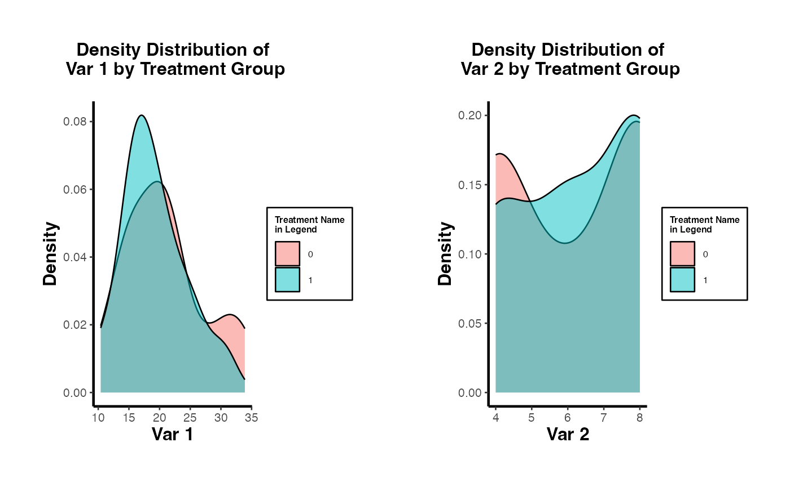
Multivariate Regression
Run a regression of each pre-treatment characteristic on the treatment dummy. This allows for the simultaneous assessment of balance on multiple characteristics. You can include all characteristics in a single regression as dependent variables.
lm_multivariate <-
lm(cbind(mpg, cyl) ~ treatment, data = data)
summary(lm_multivariate)
#> Response mpg :
#>
#> Call:
#> lm(formula = mpg ~ treatment, data = data)
#>
#> Residuals:
#> Min 1Q Median 3Q Max
#> -10.439 -4.529 -1.179 2.271 13.061
#>
#> Coefficients:
#> Estimate Std. Error t value Pr(>|t|)
#> (Intercept) 20.839 1.429 14.581 3.72e-15 ***
#> treatment -1.710 2.161 -0.792 0.435
#> ---
#> Signif. codes: 0 '***' 0.001 '**' 0.01 '*' 0.05 '.' 0.1 ' ' 1
#>
#> Residual standard error: 6.064 on 30 degrees of freedom
#> Multiple R-squared: 0.02046, Adjusted R-squared: -0.01219
#> F-statistic: 0.6265 on 1 and 30 DF, p-value: 0.4348
#>
#>
#> Response cyl :
#>
#> Call:
#> lm(formula = cyl ~ treatment, data = data)
#>
#> Residuals:
#> Min 1Q Median 3Q Max
#> -2.2857 -2.1111 -0.1111 1.7579 1.8889
#>
#> Coefficients:
#> Estimate Std. Error t value Pr(>|t|)
#> (Intercept) 6.1111 0.4274 14.30 6.21e-15 ***
#> treatment 0.1746 0.6461 0.27 0.789
#> ---
#> Signif. codes: 0 '***' 0.001 '**' 0.01 '*' 0.05 '.' 0.1 ' ' 1
#>
#> Residual standard error: 1.813 on 30 degrees of freedom
#> Multiple R-squared: 0.002428, Adjusted R-squared: -0.03082
#> F-statistic: 0.07302 on 1 and 30 DF, p-value: 0.7888All of the coefficients in each regression are not significant. Hence, we don’t have any concerns.
To be more rigorous, we should estimate all regressions simultaneously using SUR if we suspect the error terms of the different regression equations are correlated.
# install.packages("systemfit")
library(systemfit)
equation1 <- mpg ~ treatment
equation2 <- cyl ~ treatment
system <-
list(characteristic = equation1, characteristic2 = equation2)
fit <- systemfit(system, data = data, method = "SUR")
summary(fit)
#>
#> systemfit results
#> method: SUR
#>
#> N DF SSR detRCov OLS-R2 McElroy-R2
#> system 64 60 1201.65 32.5288 0.019002 0.020257
#>
#> N DF SSR MSE RMSE R2 Adj R2
#> characteristic 32 30 1103.0113 36.76705 6.06358 0.020457 -0.012194
#> characteristic2 32 30 98.6349 3.28783 1.81324 0.002428 -0.030824
#>
#> The covariance matrix of the residuals used for estimation
#> characteristic characteristic2
#> characteristic 36.76704 -9.39974
#> characteristic2 -9.39974 3.28783
#>
#> The covariance matrix of the residuals
#> characteristic characteristic2
#> characteristic 36.76704 -9.39974
#> characteristic2 -9.39974 3.28783
#>
#> The correlations of the residuals
#> characteristic characteristic2
#> characteristic 1.000000 -0.854932
#> characteristic2 -0.854932 1.000000
#>
#>
#> SUR estimates for 'characteristic' (equation 1)
#> Model Formula: mpg ~ treatment
#>
#> Estimate Std. Error t value Pr(>|t|)
#> (Intercept) 20.83889 1.42920 14.58080 3.5527e-15 ***
#> treatment -1.71032 2.16075 -0.79154 0.43484
#> ---
#> Signif. codes: 0 '***' 0.001 '**' 0.01 '*' 0.05 '.' 0.1 ' ' 1
#>
#> Residual standard error: 6.063584 on 30 degrees of freedom
#> Number of observations: 32 Degrees of Freedom: 30
#> SSR: 1103.011349 MSE: 36.767045 Root MSE: 6.063584
#> Multiple R-Squared: 0.020457 Adjusted R-Squared: -0.012194
#>
#>
#> SUR estimates for 'characteristic2' (equation 2)
#> Model Formula: cyl ~ treatment
#>
#> Estimate Std. Error t value Pr(>|t|)
#> (Intercept) 6.111111 0.427384 14.29887 6.2172e-15 ***
#> treatment 0.174603 0.646144 0.27022 0.78884
#> ---
#> Signif. codes: 0 '***' 0.001 '**' 0.01 '*' 0.05 '.' 0.1 ' ' 1
#>
#> Residual standard error: 1.813238 on 30 degrees of freedom
#> Number of observations: 32 Degrees of Freedom: 30
#> SSR: 98.634921 MSE: 3.287831 Root MSE: 1.813238
#> Multiple R-Squared: 0.002428 Adjusted R-Squared: -0.030824
# or users could use the `balance_assessment` function to get both SUR and Hotelling
results <- balance_assessment(data, "treatment", "mpg", "cyl")
print(results$SUR)
#>
#> systemfit results
#> method: SUR
#>
#> N DF SSR detRCov OLS-R2 McElroy-R2
#> system 64 60 1201.65 32.5288 0.019002 0.020257
#>
#> N DF SSR MSE RMSE R2 Adj R2
#> mpgeq 32 30 1103.0113 36.76705 6.06358 0.020457 -0.012194
#> cyleq 32 30 98.6349 3.28783 1.81324 0.002428 -0.030824
#>
#> The covariance matrix of the residuals used for estimation
#> mpgeq cyleq
#> mpgeq 36.76704 -9.39974
#> cyleq -9.39974 3.28783
#>
#> The covariance matrix of the residuals
#> mpgeq cyleq
#> mpgeq 36.76704 -9.39974
#> cyleq -9.39974 3.28783
#>
#> The correlations of the residuals
#> mpgeq cyleq
#> mpgeq 1.000000 -0.854932
#> cyleq -0.854932 1.000000
#>
#>
#> SUR estimates for 'mpgeq' (equation 1)
#> Model Formula: mpg ~ treatment
#> <environment: 0x12d4c95f8>
#>
#> Estimate Std. Error t value Pr(>|t|)
#> (Intercept) 20.83889 1.42920 14.58080 3.5527e-15 ***
#> treatment -1.71032 2.16075 -0.79154 0.43484
#> ---
#> Signif. codes: 0 '***' 0.001 '**' 0.01 '*' 0.05 '.' 0.1 ' ' 1
#>
#> Residual standard error: 6.063584 on 30 degrees of freedom
#> Number of observations: 32 Degrees of Freedom: 30
#> SSR: 1103.011349 MSE: 36.767045 Root MSE: 6.063584
#> Multiple R-Squared: 0.020457 Adjusted R-Squared: -0.012194
#>
#>
#> SUR estimates for 'cyleq' (equation 2)
#> Model Formula: cyl ~ treatment
#> <environment: 0x12d4c7898>
#>
#> Estimate Std. Error t value Pr(>|t|)
#> (Intercept) 6.111111 0.427384 14.29887 6.2172e-15 ***
#> treatment 0.174603 0.646144 0.27022 0.78884
#> ---
#> Signif. codes: 0 '***' 0.001 '**' 0.01 '*' 0.05 '.' 0.1 ' ' 1
#>
#> Residual standard error: 1.813238 on 30 degrees of freedom
#> Number of observations: 32 Degrees of Freedom: 30
#> SSR: 98.634921 MSE: 3.287831 Root MSE: 1.813238
#> Multiple R-Squared: 0.002428 Adjusted R-Squared: -0.030824For mpg and cyl: The treatment effect is not statistically significant, implying no evidence against random unit assignment based on this characteristic.
Hotelling’s T-squared test
This is the multivariate counterpart of the T-test designed to test the mean vector of two groups. It’s useful when you have multiple pre-treatment characteristics and you want to test if their mean vectors differ between the treated and control groups.
# For Hotelling's T^2, you can use the `Hotelling` package.
# install.packages("Hotelling")
library(Hotelling)
treated_data <-
data[data$treatment == 1, c("mpg", "cyl" )]
control_data <-
data[data$treatment == 0, c("mpg", "cyl" )]
hotelling_test_res <- hotelling.test(treated_data, control_data)
hotelling_test_res
#> Test stat: 1.2406
#> Numerator df: 2
#> Denominator df: 29
#> P-value: 0.5557
# or users could use the `balance_assessment` function to get both SUR and Hotelling
results <- balance_assessment(data, "treatment", "mpg", "cyl")
print(results$Hotelling)
#> Test stat: 1.2406
#> Numerator df: 2
#> Denominator df: 29
#> P-value: 0.5557Matching
This is a more advanced technique, for example, modeling the probability of being treated based on pre-treatment characteristics using a logistic regression. After matching, you can test for balance in the pre-treatment characteristics between the treated and control groups.
# For propensity score matching, use the `MatchIt` package.
# install.packages("MatchIt")
library(MatchIt)
m.out <-
matchit(treatment ~ mpg + cyl,
data = data,
method = "nearest")
matched_data <- match.data(m.out)
# After matching, you can test for balance using t-tests or regressions.
t.test(mpg ~ treatment, data = matched_data)
#>
#> Welch Two Sample t-test
#>
#> data: mpg by treatment
#> t = -0.035239, df = 25.957, p-value = 0.9722
#> alternative hypothesis: true difference in means between group 0 and group 1 is not equal to 0
#> 95 percent confidence interval:
#> -4.238310 4.095453
#> sample estimates:
#> mean in group 0 mean in group 1
#> 19.05714 19.12857In conclusion, while visualizations provide an intuitive understanding, statistical tests provide a more rigorous method for assessing balance.
DID with in and out treatment status
Plots
Balance Scatter
Since the PanelMatch package is no longer being updated or developed, and its balance_scatter function does not return a ggplot object, I have modified the code to return a ggplot object in a more flexible manner.
library(PanelMatch)
pd_dem <- PanelData(panel.data = dem, unit.id = "wbcode2",
time.id = "year", treatment = "dem", outcome = "y")
# Maha 4-year lag, up to 5 matches
PM.results.maha.4lag.5m <- PanelMatch::PanelMatch(
panel.data = pd_dem,
lag = 4,
refinement.method = "mahalanobis",
match.missing = TRUE,
covs.formula = ~ I(lag(tradewb, 1:4)) + I(lag(y, 1:4)),
size.match = 5,
qoi = "att",
lead = 0:4,
forbid.treatment.reversal = FALSE,
use.diagonal.variance.matrix = TRUE
)
# Maha 4-year lag, up to 10 matches
PM.results.maha.4lag.10m <- PanelMatch::PanelMatch(
panel.data = pd_dem,
lag = 4,
refinement.method = "mahalanobis",
match.missing = TRUE,
covs.formula = ~ I(lag(tradewb, 1:4)) + I(lag(y, 1:4)),
size.match = 10,
qoi = "att",
lead = 0:4,
forbid.treatment.reversal = FALSE,
use.diagonal.variance.matrix = TRUE
)
# Using the function
balance_scatter_custom(
pm_result_list = list(PM.results.maha.4lag.5m, PM.results.maha.4lag.10m),
panel.data = pd_dem,
set.names = c("Maha 4 Lag 5 Matches", "Maha 4 Lag 10 Matches"),
dot.size = 5,
covariates = c("y", "tradewb")
)When conducting research using matching methods for causal inference with time-series cross-sectional data (as with the PanelMatch package), it’s essential to evaluate the robustness of different matching or weighting methods. This assessment allows researchers to gauge the improvement in covariate balance resulting from the refinement of the matched set. Testing the robustness ensures that the findings are not an artifact of a specific matching method but are consistent across different approaches. In essence, a robust result gives more confidence in the causal relationships identified. Below is a quick guide on how to proceed:
library(PanelMatch)
runPanelMatch <- function(method, lag, size.match=NULL, qoi = "att") {
# Default parameters for PanelMatch (v3.1.1+ API)
common.args <- list(
panel.data = pd_dem,
lag = lag,
covs.formula = ~ I(lag(tradewb, 1:4)) + I(lag(y, 1:4)),
qoi = qoi,
lead = 0:4,
forbid.treatment.reversal = FALSE,
size.match = size.match
)
if(method == "mahalanobis") {
common.args$refinement.method <- "mahalanobis"
common.args$match.missing <- TRUE
common.args$use.diagonal.variance.matrix <- TRUE
} else if(method == "ps.match") {
common.args$refinement.method <- "ps.match"
common.args$match.missing <- FALSE
common.args$listwise.delete <- TRUE
} else if(method == "ps.weight") {
common.args$refinement.method <- "ps.weight"
common.args$match.missing <- FALSE
common.args$listwise.delete <- TRUE
}
return(do.call(PanelMatch, common.args))
}
methods <- c("mahalanobis", "ps.match", "ps.weight")
lags <- c(1, 4)
sizes <- c(5, 10)Run sequentially
res_pm <- list()
for(method in methods) {
for(lag in lags) {
for(size in sizes) {
name <- paste0(method, ".", lag, "lag.", size, "m")
res_pm[[name]] <- runPanelMatch(method, lag, size)
}
}
}
# for treatment reversal
res_pm_rev <- list()
for(method in methods) {
for(lag in lags) {
for(size in sizes) {
name <- paste0(method, ".", lag, "lag.", size, "m")
res_pm_rev[[name]] <- runPanelMatch(method, lag, size, qoi = "art")
}
}
}Run parallel
library(foreach)
library(doParallel)
registerDoParallel(cores = 4)
# Initialize an empty list to store results
res_pm <- list()
# Replace nested for-loops with foreach
results <-
foreach(
method = methods,
.combine = 'c',
.multicombine = TRUE,
.packages = c("PanelMatch", "causalverse")
) %dopar% {
tmp <- list()
for (lag in lags) {
for (size in sizes) {
name <- paste0(method, ".", lag, "lag.", size, "m")
tmp[[name]] <- runPanelMatch(method, lag, size)
}
}
tmp
}
# Collate results
for (name in names(results)) {
res_pm[[name]] <- results[[name]]
}
# Treatment reversal
# Initialize an empty list to store results
res_pm_rev <- list()
# Replace nested for-loops with foreach
results_rev <-
foreach(
method = methods,
.combine = 'c',
.multicombine = TRUE,
.packages = c("PanelMatch", "causalverse")
) %dopar% {
tmp <- list()
for (lag in lags) {
for (size in sizes) {
name <- paste0(method, ".", lag, "lag.", size, "m")
tmp[[name]] <-
runPanelMatch(method, lag, size, qoi = "art")
}
}
tmp
}
# Collate results
for (name in names(results_rev)) {
res_pm_rev[[name]] <- results_rev[[name]]
}
stopImplicitCluster()
# Now, you can access res_pm using res_pm[["mahalanobis.1lag.5m"]] etc.
library(gridExtra)
# Updated plotting function
create_balance_plot <- function(method, lag, sizes, res_pm) {
pm_results <- lapply(sizes, function(size) {
res_pm[[paste0(method, ".", lag, "lag.", size, "m")]]
})
return(balance_scatter_custom(
pm_result_list = pm_results,
panel.data = pd_dem,
legend.title = "Possible Matches",
set.names = as.character(sizes),
legend.position = c(0.2,0.8),
# for compiled plot, you don't need x,y, or main labs
x.axis.label = "",
y.axis.label = "",
main = "",
dot.size = 5,
theme_use = causalverse::ama_theme(
base_size = 32,
legend_title_size = 12,
legend_text_size = 12
),
covariates = c("y", "tradewb")
))
}
plots <- list()
for (method in methods) {
for (lag in lags) {
plots[[paste0(method, ".", lag, "lag")]] <-
create_balance_plot(method, lag, sizes, res_pm)
}
}
# Arranging plots in a 3x2 grid
grid.arrange(plots[["mahalanobis.1lag"]],
plots[["mahalanobis.4lag"]],
plots[["ps.match.1lag"]],
plots[["ps.match.4lag"]],
plots[["ps.weight.1lag"]],
plots[["ps.weight.4lag"]],
ncol=2, nrow=3)
# Standardized Mean Difference of Covariates
library(gridExtra)
library(grid)
# Create column and row labels using textGrob
col_labels <- c("1-year Lag", "4-year Lag")
row_labels <- c("Maha Matching", "PS Matching", "PS Weigthing")
major.axes.fontsize = 20
minor.axes.fontsize = 16To export
png(
file.path(getwd(), "export", "balance_scatter.png"),
width = 1200,
height = 1000
)
# Create a list-of-lists, where each inner list represents a row
grid_list <- list(
list(
nullGrob(),
textGrob(col_labels[1], gp = gpar(fontsize = minor.axes.fontsize)),
textGrob(col_labels[2], gp = gpar(fontsize = minor.axes.fontsize))
),
list(textGrob(
row_labels[1],
gp = gpar(fontsize = minor.axes.fontsize),
rot = 90
), plots[["mahalanobis.1lag"]], plots[["mahalanobis.4lag"]]),
list(textGrob(
row_labels[2],
gp = gpar(fontsize = minor.axes.fontsize),
rot = 90
), plots[["ps.match.1lag"]], plots[["ps.match.4lag"]]),
list(textGrob(
row_labels[3],
gp = gpar(fontsize = minor.axes.fontsize),
rot = 90
), plots[["ps.weight.1lag"]], plots[["ps.weight.4lag"]])
)
# "Flatten" the list-of-lists into a single list of grobs
grobs <- do.call(c, grid_list)
grid.arrange(
grobs = grobs,
ncol = 3,
nrow = 4,
widths = c(0.15, 0.42, 0.42),
heights = c(0.15, 0.28, 0.28, 0.28)
)
grid.text(
"Before Refinement",
x = 0.5,
y = 0.03,
gp = gpar(fontsize = major.axes.fontsize)
)
grid.text(
"After Refinement",
x = 0.03,
y = 0.5,
rot = 90,
gp = gpar(fontsize = major.axes.fontsize)
)
dev.off()
library(knitr)
include_graphics(file.path(getwd(), "export", "balance_scatter.png"))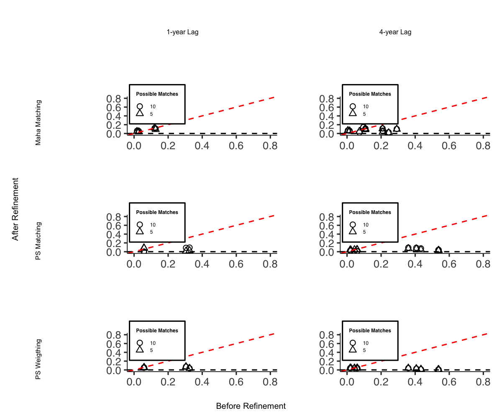
I do not include it in this vignette due to display issues, but the code can be easily replicated.
Balance Trends over Pre-treatment Periods
In the original PanelMatch package, the function get_covariate_balance does not return a ggplot object. Therefore, it is necessary to construct our own visualization. However, one can utilize the output dataset from get_covariate_balance for this purpose.
PM.results.ps.weight <-
PanelMatch(
panel.data = pd_dem,
lag = 4,
refinement.method = "ps.weight",
match.missing = FALSE,
listwise.delete = TRUE,
covs.formula = ~ I(lag(tradewb, 1:4)) + I(lag(y, 1:4)),
size.match = 5,
qoi = "att",
lead = 0:4,
forbid.treatment.reversal = FALSE
)
bal <- get_covariate_balance(
PM.results.ps.weight,
panel.data = pd_dem,
covariates = c("tradewb", "y")
)
# Extract the balance matrix for plotting
df <- bal[[1]][[1]]
plot_covariate_balance_pretrend(df)We must also examine multiple matching and refining methods to ensure that we have robust evidence for covariate balance over the pre-treatment time period.
# Step 1: Define configurations
configurations <- list(
list(refinement.method = "none", qoi = "att"),
list(refinement.method = "none", qoi = "art"),
list(refinement.method = "mahalanobis", qoi = "att"),
list(refinement.method = "mahalanobis", qoi = "art"),
list(refinement.method = "ps.match", qoi = "att"),
list(refinement.method = "ps.match", qoi = "art"),
list(refinement.method = "ps.weight", qoi = "att"),
list(refinement.method = "ps.weight", qoi = "art")
)
# Step 2: Use lapply or loop to generate results
results <- lapply(configurations, function(config) {
PanelMatch(
panel.data = pd_dem,
lag = 4,
match.missing = FALSE,
listwise.delete = TRUE,
size.match = 5,
lead = 0:4,
forbid.treatment.reversal = FALSE,
refinement.method = config$refinement.method,
covs.formula = ~ I(lag(tradewb, 1:4)) + I(lag(y, 1:4)),
qoi = config$qoi
)
})
# Step 3: Get covariate balance and plot
plots <- mapply(function(result, config) {
bal <- get_covariate_balance(
result,
panel.data = pd_dem,
covariates = c("tradewb", "y")
)
df <- bal[[1]][[1]]
causalverse::plot_covariate_balance_pretrend(df, main = "")
}, results, configurations, SIMPLIFY = FALSE)
# Set names for plots
names(plots) <- sapply(configurations, function(config) {
paste(config$qoi, config$refinement.method, sep = ".")
})
# To view plots
lapply(plots, print)
grid.arrange(
plots$att.none,
plots$att.mahalanobis,
plots$att.ps.match,
plots$att.ps.weight,
plots$art.none,
plots$art.mahalanobis,
plots$art.ps.match,
plots$art.ps.weight,
ncol = 4,
nrow = 2
)For a fancier plot
library(gridExtra)
library(grid)
# Column and row labels
col_labels <-
c("None",
"Mahalanobis",
"Propensity Score Matching",
"Propensity Score Weighting")
row_labels <- c("ATT", "ART")
# Specify your desired fontsize for labels
minor.axes.fontsize <- 16
major.axes.fontsize <- 20
png(
file.path(getwd(), "export", "var_balance_pretreat.png"),
width = 1200,
height = 1000
)
# Create a list-of-lists, where each inner list represents a row
grid_list <- list(
list(
nullGrob(),
textGrob(col_labels[1], gp = gpar(fontsize = minor.axes.fontsize)),
textGrob(col_labels[2], gp = gpar(fontsize = minor.axes.fontsize)),
textGrob(col_labels[3], gp = gpar(fontsize = minor.axes.fontsize)),
textGrob(col_labels[4], gp = gpar(fontsize = minor.axes.fontsize))
),
list(
textGrob(row_labels[1], gp = gpar(fontsize = minor.axes.fontsize), rot = 90),
plots$att.none,
plots$att.mahalanobis,
plots$att.ps.match,
plots$att.ps.weight
),
list(
textGrob(row_labels[2], gp = gpar(fontsize = minor.axes.fontsize), rot = 90),
plots$art.none,
plots$art.mahalanobis,
plots$art.ps.match,
plots$art.ps.weight
)
)
# "Flatten" the list-of-lists into a single list of grobs
grobs <- do.call(c, grid_list)
# Arrange your plots with text labels
grid.arrange(
grobs = grobs,
ncol = 5,
nrow = 3,
widths = c(0.1, 0.225, 0.225, 0.225, 0.225),
heights = c(0.1, 0.45, 0.45)
)
# Add main x and y axis titles
grid.text(
"Refinement Methods",
x = 0.5,
y = 0.01,
gp = gpar(fontsize = major.axes.fontsize)
)
grid.text(
"Quantities of Interest",
x = 0.02,
y = 0.5,
rot = 90,
gp = gpar(fontsize = major.axes.fontsize)
)
dev.off()Estimation
# sequential
# Step 1: Apply PanelEstimate function
# Initialize an empty list to store results
res_est <- vector("list", length(res_pm))
# Iterate over each element in res_pm
for (i in 1:length(res_pm)) {
res_est[[i]] <- PanelEstimate(
res_pm[[i]],
panel.data = pd_dem,
se.method = "bootstrap",
number.iterations = 1000,
confidence.level = .95
)
# Transfer the name of the current element to the res_est list
names(res_est)[i] <- names(res_pm)[i]
}
# Step 2: Apply plot_PanelEstimate function
# Initialize an empty list to store plot results
res_est_plot <- vector("list", length(res_est))
# Iterate over each element in res_est
for (i in 1:length(res_est)) {
res_est_plot[[i]] <-
causalverse::plot_panel_estimate(res_est[[i]],
main = "",
theme_use = causalverse::ama_theme(base_size = 14))
# Transfer the name of the current element to the res_est_plot list
names(res_est_plot)[i] <- names(res_est)[i]
}
# check results
res_est_plot$mahalanobis.1lag.5m
# Step 1: Apply PanelEstimate function for res_pm_rev
# Initialize an empty list to store results
res_est_rev <- vector("list", length(res_pm_rev))
# Iterate over each element in res_pm_rev
for (i in 1:length(res_pm_rev)) {
res_est_rev[[i]] <- PanelEstimate(
res_pm_rev[[i]],
panel.data = pd_dem,
se.method = "bootstrap",
number.iterations = 1000,
confidence.level = .95
)
# Transfer the name of the current element to the res_est_rev list
names(res_est_rev)[i] <- names(res_pm_rev)[i]
}
# Step 2: Apply plot_PanelEstimate function for res_est_rev
# Initialize an empty list to store plot results
res_est_plot_rev <- vector("list", length(res_est_rev))
# Iterate over each element in res_est_rev
for (i in 1:length(res_est_rev)) {
res_est_plot_rev[[i]] <-
causalverse::plot_panel_estimate(res_est_rev[[i]],
main = "",
theme_use = causalverse::ama_theme(base_size = 14))
# Transfer the name of the current element to the res_est_plot_rev list
names(res_est_plot_rev)[i] <- names(res_est_rev)[i]
}
# parallel
library(doParallel)
library(foreach)
# Detect the number of cores to use for parallel processing
num_cores <- 4
# Register the parallel backend
cl <- makeCluster(num_cores)
registerDoParallel(cl)
# Step 1: Apply PanelEstimate function in parallel
res_est <-
foreach(i = 1:length(res_pm), .packages = "PanelMatch") %dopar% {
PanelEstimate(
res_pm[[i]],
panel.data = pd_dem,
se.method = "bootstrap",
number.iterations = 1000,
confidence.level = .95
)
}
# Transfer names from res_pm to res_est
names(res_est) <- names(res_pm)
# Step 2: Apply plot_PanelEstimate function in parallel
res_est_plot <-
foreach(
i = 1:length(res_est),
.packages = c("PanelMatch", "causalverse", "ggplot2")
) %dopar% {
causalverse::plot_panel_estimate(res_est[[i]],
main = "",
theme_use = causalverse::ama_theme(base_size = 10))
}
# Transfer names from res_est to res_est_plot
names(res_est_plot) <- names(res_est)
# Step 1: Apply PanelEstimate function for res_pm_rev in parallel
res_est_rev <-
foreach(i = 1:length(res_pm_rev), .packages = "PanelMatch") %dopar% {
PanelEstimate(
res_pm_rev[[i]],
panel.data = pd_dem,
se.method = "bootstrap",
number.iterations = 1000,
confidence.level = .95
)
}
# Transfer names from res_pm_rev to res_est_rev
names(res_est_rev) <- names(res_pm_rev)
# Step 2: Apply plot_PanelEstimate function for res_est_rev in parallel
res_est_plot_rev <-
foreach(
i = 1:length(res_est_rev),
.packages = c("PanelMatch", "causalverse", "ggplot2")
) %dopar% {
causalverse::plot_panel_estimate(res_est_rev[[i]],
main = "",
theme_use = causalverse::ama_theme(base_size = 10))
}
# Transfer names from res_est_rev to res_est_plot_rev
names(res_est_plot_rev) <- names(res_est_rev)
# Stop the cluster
stopCluster(cl)
library(gridExtra)
library(grid)
# Column and row labels
col_labels <- c("Mahalanobis 5m",
"Mahalanobis 10m",
"PS Matching 5m",
"PS Matching 10m",
"PS Weighting 5m")
row_labels <- c("ATT", "ART")
# Specify your desired fontsize for labels
minor.axes.fontsize <- 16
major.axes.fontsize <- 20
# Create a list-of-lists, where each inner list represents a row
grid_list <- list(
list(
nullGrob(),
textGrob(col_labels[1], gp = gpar(fontsize = minor.axes.fontsize)),
textGrob(col_labels[2], gp = gpar(fontsize = minor.axes.fontsize)),
textGrob(col_labels[3], gp = gpar(fontsize = minor.axes.fontsize)),
textGrob(col_labels[4], gp = gpar(fontsize = minor.axes.fontsize)),
textGrob(col_labels[5], gp = gpar(fontsize = minor.axes.fontsize))
),
list(
textGrob(row_labels[1], gp = gpar(fontsize = minor.axes.fontsize), rot = 90),
res_est_plot$mahalanobis.1lag.5m,
res_est_plot$mahalanobis.1lag.10m,
res_est_plot$ps.match.1lag.5m,
res_est_plot$ps.match.1lag.10m,
res_est_plot$ps.weight.1lag.5m
),
list(
textGrob(row_labels[2], gp = gpar(fontsize = minor.axes.fontsize), rot = 90),
res_est_plot_rev$mahalanobis.1lag.5m,
res_est_plot_rev$mahalanobis.1lag.10m,
res_est_plot_rev$ps.match.1lag.5m,
res_est_plot_rev$ps.match.1lag.10m,
res_est_plot_rev$ps.weight.1lag.5m
)
)
# "Flatten" the list-of-lists into a single list of grobs
grobs <- do.call(c, grid_list)
# Arrange your plots with text labels
grid.arrange(
grobs = grobs,
ncol = 6,
nrow = 3,
widths = c(0.1, 0.18, 0.18, 0.18, 0.18, 0.18),
heights = c(0.1, 0.45, 0.45)
)
# Add main x and y axis titles
grid.text(
"Methods",
x = 0.5,
y = 0.02,
gp = gpar(fontsize = major.axes.fontsize)
)
grid.text(
"",
x = 0.02,
y = 0.5,
rot = 90,
gp = gpar(fontsize = major.axes.fontsize)
)Staggered DID
Staggered DiD (Difference-in-Differences) designs are becoming increasingly common in empirical research. These designs arise when different units (like firms, regions, or countries) receive treatments at different time periods. This presents a unique challenge, as standard DiD methods often do not apply seamlessly to such setups.
For data analyses involving staggered DiD designs, it’s pivotal to properly align treatment and control groups. Enter the stack_data function.
What does staggered DiD mean? It’s when different groups receive treatment at varied times. Simply analyzing this using standard DiD methods can lead to wrong results because the control (comparison) groups become intertwined and misaligned. This is often referred to as the forbidden regression due to these muddled control groups.
The brilliance of the stack_data function is how it streamlines the data:
Creating Cohorts: The function first categorizes or groups the data based on when a treatment was applied. Each of these groups is called a cohort.
Defining Control Groups: For every treatment cohort (those treated at the same time), control units are meticulously chosen. These are units either never treated or those yet to receive treatment. The distinction matters and ensures precision in comparisons.
Stacking with Reference: Now, while stacking these cohorts, the function treats the period of treatment for each cohort as their respective reference or benchmark. So, even if one group was treated in 2019 and another in 2022, during stacking, the 2019 treated period aligns with the 2022 one. This alignment ensures a consistent reference period across cohorts.
Adding Markers: To make future analysis smoother, the function adds relative period dummy variables. These act like bookmarks, indicating periods before and after the treatment for each stacked cohort.
Parameters:
treated_period_var: The column name indicating when a given unit was treated.time_var: The column indicating time periods.pre_window: Number of periods before the treatment to consider.post_window: Number of periods after the treatment to consider.data: The dataset to be processed.
The function assumes the existence of a control group, represented by the value 10000 in the treated_period_var column.
Example Usage
Now, let’s see the function in action using the base_stagg dataset from the did package:
# Assuming the function is loaded from your package:
library(did)
library(fixest)
data(base_stagg)
# The stack_data function now has a control_type argument. This allows users to specify
# the type of control group they want to include in their study: "both", "never-treated", or "not-yet-treated".
# It's crucial to select an appropriate control group for your analysis. Different control groups can
# lead to different interpretations. For instance:
# - "never-treated" refers to units that never receive the treatment.
# - "not-yet-treated" refers to units that will eventually be treated but haven't been as of a given period.
# - "both" uses a combination of the two above.
# Let's see how the function behaves for each control type:
# 1. Using both never-treated and not-yet-treated as controls:
stacked_data_both <- stack_data("year_treated", "year", 3, 3, base_stagg, control_type = "both")
feols_result_both <- feols(as.formula(paste0(
"y ~ ",
paste(paste0("`rel_period_", c(-3:-2, 0:3), "`"), collapse = " + "),
" | id ^ df + year ^ df"
)), data = stacked_data_both)
# 2. Using only never-treated units as controls:
stacked_data_never <- stack_data("year_treated", "year", 3, 3, base_stagg, control_type = "never-treated")
feols_result_never <- feols(as.formula(paste0(
"y ~ ",
paste(paste0("`rel_period_", c(-3:-2, 0:3), "`"), collapse = " + "),
" | id ^ df + year ^ df"
)), data = stacked_data_never)
# 3. Using only not-yet-treated units as controls:
stacked_data_notyet <- stack_data("year_treated", "year", 3, 3, base_stagg, control_type = "not-yet-treated")
feols_result_notyet <- feols(as.formula(paste0(
"y ~ ",
paste(paste0("`rel_period_", c(-3:-2, 0:3), "`"), collapse = " + "),
" | id ^ df + year ^ df"
)), data = stacked_data_notyet)
fixest::etable(feols_result_both,
feols_result_never,
feols_result_notyet,
vcov = ~ id ^ df + year ^ df)
#> feols_result_both feols_result_never feols_result_no..
#> Dependent Var.: y y y
#>
#> `rel_period_-3` 0.3699 (0.7082) 0.3820 (0.6960) 0.2173 (1.164)
#> `rel_period_-2` 0.5794 (0.6933) 0.5918 (0.6779) 0.3961 (1.060)
#> rel_period_0 -5.017*** (0.8825) -5.042*** (0.8763) -2.757** (0.9691)
#> rel_period_1 -3.226*** (0.7546) -3.246*** (0.7291) -1.988. (1.161)
#> rel_period_2 -2.463** (0.7358) -2.451** (0.7128) -1.436 (1.113)
#> rel_period_3 -0.5316 (0.8103) -0.4680 (0.8137) 0.2322 (1.030)
#> Fixed-Effects: ------------------ ------------------ -----------------
#> id-df Yes Yes Yes
#> year-df Yes Yes Yes
#> _______________ __________________ __________________ _________________
#> S.E.: Clustered by: year,df) by: year,df) by: year,df)
#> Observations 3,425 2,970 725
#> R2 0.32684 0.33290 0.50317
#> Within R2 0.07325 0.08228 0.06261
#> ---
#> Signif. codes: 0 '***' 0.001 '**' 0.01 '*' 0.05 '.' 0.1 ' ' 1
# Sample regression summary using the output for the "both" case as an example:
summary(feols_result_both, agg = c("att" = "rel_period_[012345]"))
#> OLS estimation, Dep. Var.: y
#> Observations: 3,425
#> Fixed-effects: id^df: 570, year^df: 54
#> Standard-errors: IID
#> Estimate Std. Error t value Pr(>|t|)
#> `rel_period_-3` 0.369901 0.512108 0.722312 4.7016e-01
#> `rel_period_-2` 0.579418 0.490429 1.181451 2.3752e-01
#> att -3.046195 0.384306 -7.926477 3.2276e-15 ***
#> ---
#> Signif. codes: 0 '***' 0.001 '**' 0.01 '*' 0.05 '.' 0.1 ' ' 1
#> RMSE: 1.94202 Adj. R2: 0.175642
#> Within R2: 0.073253
# Coefficient plot
coefplot(list(feols_result_both,
feols_result_never,
feols_result_notyet))
legend("bottomright", col = 1:3, lty = 1:3, legend = c("Both", "Never", "Notyet"))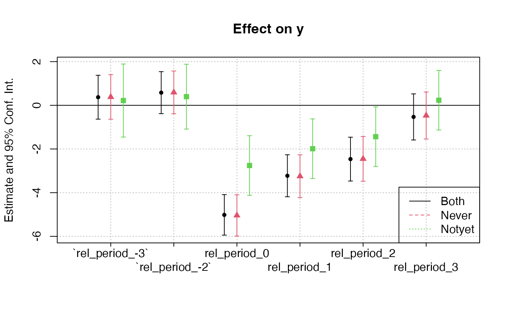
Differences in the estimates across the three models arise from the variation in control groups:
-
Both Never-Treated and Not-Yet-Treated:
- Uses both control groups. The similarity with the “Never-Treated” estimates suggests consistent pre-treatment trends between these control groups and the treated units.
-
Never-Treated:
- Units never receiving treatment. Given the similarity with the combined group, it implies this group provides a reliable counterfactual.
-
Not-Yet-Treated:
- Units eventually getting treatment. The substantially lower estimates suggest differential pre-treatment trends compared to treated units, potentially biasing treatment effects.
The observed differences emphasize the importance of the parallel trends assumption in difference-in-differences analyses. Violations can bias treatment effect estimates. The choice of control group(s) should be grounded in understanding their appropriateness as counterfactuals, and additional analyses (like visualizing trends) can reinforce the validity of results.
Note: Users should carefully consider which control group makes the most sense for their research question and the available data. Differences in results between control groups can arise due to various factors like treatment spillovers, different underlying trends, or selection into treatment.
Additional Analyses
DID Plot
The most illuminating visual representation in DID analysis features a plot that contrasts ‘before’ and ‘after’ scenarios for both the treatment and control groups. In this graph, time serves as the variable on the x-axis, separating the data into ‘before’ and ‘after’ periods. The variable determining the group—whether treated or control—is utilized as the categorizing factor. Meanwhile, the y-axis displays the estimated values of the dependent variable under study.
# Calculate means
avg_outcomes <- fixest::base_did %>%
group_by(treat, post) %>%
summarize(avg_y = mean(y))
#> `summarise()` has regrouped the output.
#> ℹ Summaries were computed grouped by treat and post.
#> ℹ Output is grouped by treat.
#> ℹ Use `summarise(.groups = "drop_last")` to silence this message.
#> ℹ Use `summarise(.by = c(treat, post))` for per-operation grouping
#> (`?dplyr::dplyr_by`) instead.
# Create the visualization
ggplot(avg_outcomes,
aes(
x = as.factor(post),
y = avg_y,
group = treat,
color = as.factor(treat)
)) +
geom_line(aes(linetype = as.factor(treat)), size = 1) +
geom_point(size = 3) +
labs(
title = "Difference-in-Differences Visualization",
x = "Period",
y = "Average Outcome (y)"
) +
scale_x_discrete(labels = c("0" = "Pre", "1" = "Post")) +
scale_color_manual(values = c("0" = "blue", "1" = "red"),
labels = c("0" = "Control", "1" = "Treated")) +
scale_linetype_manual(values = c("0" = "dashed", "1" = "solid"),
labels = c("0" = "Control", "1" = "Treated")) +
causalverse::ama_theme() +
theme(legend.position = "bottom") +
guides(color = guide_legend(override.aes = list(linetype = "blank")),
linetype = guide_legend(override.aes = list(color = c("blue", "red"))))
#> Warning: Using `size` aesthetic for lines was deprecated in ggplot2 3.4.0.
#> ℹ Please use `linewidth` instead.
#> This warning is displayed once per session.
#> Call `lifecycle::last_lifecycle_warnings()` to see where this warning was
#> generated.
But you can always go with a more complicated plot
library(fixest)
data("base_did")
est_did <- feols(y ~ x1 + i(period, treat, 5) |id + period, base_did)
iplot(est_did)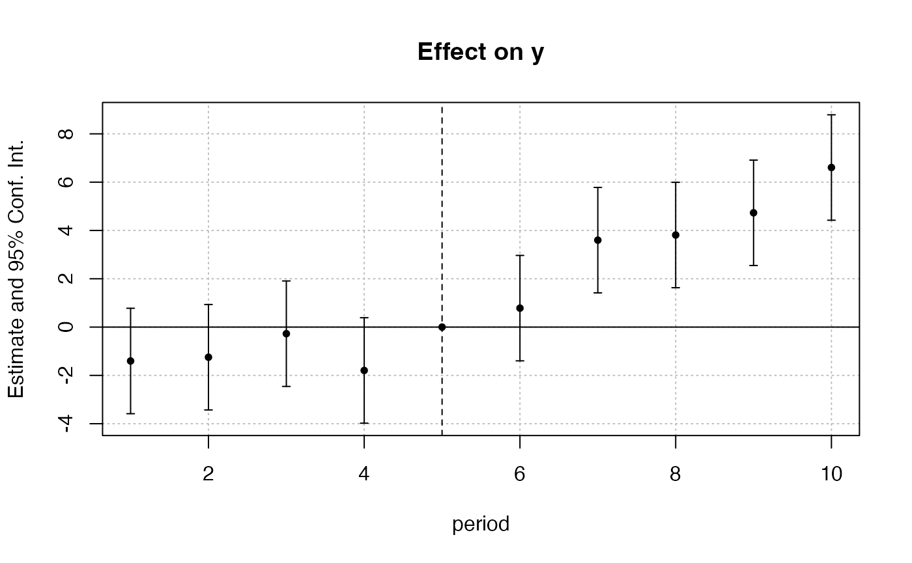
State-of-the-Art DID Methods
Recent econometric research has highlighted potential pitfalls of traditional two-way fixed effects (TWFE) DID estimators, especially in staggered adoption settings with heterogeneous treatment effects. Several modern packages address these issues.
Callaway and Sant’Anna (2021) with did
The did package estimates group-time average treatment effects on the treated (ATT), where a “group” is defined by the time period in which units first receive treatment. These group-time ATTs can then be aggregated into interpretable summary measures (e.g., event-study plots, overall ATT).
library(did)
# Using simulated data from fixest::base_stagg
data(base_stagg, package = "fixest")
# Group-time ATT estimation
att_gt_res <- att_gt(
yname = "y",
tname = "year",
idname = "id",
gname = "year_treated",
data = base_stagg
)
#> Warning in att_gt(yname = "y", tname = "year", idname = "id", gname =
#> "year_treated", : Not returning pre-test Wald statistic due to singular
#> covariance matrix
summary(att_gt_res)
#>
#> Call:
#> att_gt(yname = "y", tname = "year", idname = "id", gname = "year_treated",
#> data = base_stagg)
#>
#> Reference: Callaway, Brantly and Pedro H.C. Sant'Anna. "Difference-in-Differences with Multiple Time Periods." Journal of Econometrics, Vol. 225, No. 2, pp. 200-230, 2021. <https://doi.org/10.1016/j.jeconom.2020.12.001>, <https://arxiv.org/abs/1803.09015>
#>
#> Group-Time Average Treatment Effects:
#> Group Time ATT(g,t) Std. Error [95% Simult. Conf. Band]
#> 2 2 -0.0620 1.1911 -3.1703 3.0463
#> 2 3 0.8025 1.3498 -2.7199 4.3249
#> 2 4 0.5652 0.6619 -1.1620 2.2924
#> 2 5 1.5055 0.9102 -0.8699 3.8809
#> 2 6 2.5619 0.9823 -0.0014 5.1252
#> 2 7 4.0190 1.2786 0.6824 7.3555 *
#> 2 8 5.2139 1.0253 2.5382 7.8895 *
#> 2 9 4.8127 1.4568 1.0111 8.6144 *
#> 2 10 7.9529 0.9365 5.5089 10.3968 *
#> 3 2 -1.3460 1.3046 -4.7504 2.0584
#> 3 3 -1.3730 1.5103 -5.3142 2.5682
#> 3 4 -0.8442 1.7635 -5.4461 3.7578
#> 3 5 0.7506 1.1275 -2.1918 3.6929
#> 3 6 1.9911 1.2828 -1.3565 5.3387
#> 3 7 3.7285 1.6547 -0.5897 8.0466
#> 3 8 3.7314 2.5322 -2.8767 10.3396
#> 3 9 7.4758 2.6575 0.5408 14.4108 *
#> 3 10 4.3601 2.9930 -3.4505 12.1707
#> 4 2 0.7299 1.4335 -3.0111 4.4709
#> 4 3 -0.9643 1.5167 -4.9222 2.9937
#> 4 4 -3.3764 1.2132 -6.5424 -0.2104 *
#> 4 5 -0.9700 0.9563 -3.4655 1.5256
#> 4 6 -0.0725 0.6430 -1.7506 1.6056
#> 4 7 2.5712 1.1214 -0.3551 5.4975
#> 4 8 3.4541 1.2511 0.1892 6.7190 *
#> 4 9 3.1764 1.4733 -0.6685 7.0212
#> 4 10 5.1465 1.3558 1.6085 8.6845 *
#> 5 2 -0.6639 0.6639 -2.3964 1.0685
#> 5 3 -0.2123 2.0776 -5.6340 5.2093
#> 5 4 2.1402 1.7265 -2.3653 6.6458
#> 5 5 -4.9388 1.3155 -8.3717 -1.5058 *
#> 5 6 -4.1322 0.8872 -6.4473 -1.8170 *
#> 5 7 -3.3633 1.6600 -7.6954 0.9687
#> 5 8 -3.1209 1.4206 -6.8281 0.5862
#> 5 9 -0.3087 1.4654 -4.1329 3.5155
#> 5 10 -1.3253 1.1061 -4.2120 1.5613
#> 6 2 3.5058 1.6196 -0.7208 7.7324
#> 6 3 -1.4542 1.4419 -5.2169 2.3085
#> 6 4 -0.1240 1.4768 -3.9778 3.7298
#> 6 5 -0.2167 1.5641 -4.2984 3.8650
#> 6 6 -4.7504 1.6686 -9.1047 -0.3961 *
#> 6 7 -5.2317 1.2863 -8.5883 -1.8751 *
#> 6 8 -4.0769 1.3858 -7.6932 -0.4606 *
#> 6 9 0.6196 1.1621 -2.4130 3.6521
#> 6 10 -2.2901 2.3250 -8.3575 3.7772
#> 7 2 1.7657 1.2251 -1.4314 4.9627
#> 7 3 -2.4189 1.0650 -5.1983 0.3604
#> 7 4 -0.2841 0.8225 -2.4305 1.8623
#> 7 5 -0.2590 1.3584 -3.8040 3.2860
#> 7 6 0.9715 1.1292 -1.9753 3.9184
#> 7 7 -6.0081 1.4768 -9.8621 -2.1542 *
#> 7 8 -4.8125 0.9117 -7.1917 -2.4333 *
#> 7 9 -4.3741 1.1821 -7.4589 -1.2892 *
#> 7 10 -3.2556 1.3242 -6.7111 0.1999
#> 8 2 -0.9745 1.2819 -4.3197 2.3707
#> 8 3 0.3279 1.2405 -2.9092 3.5650
#> 8 4 0.2493 1.0775 -2.5625 3.0610
#> 8 5 -0.5672 0.8484 -2.7812 1.6468
#> 8 6 2.1065 0.9816 -0.4550 4.6680
#> 8 7 -0.6701 0.8419 -2.8671 1.5268
#> 8 8 -6.1554 1.0625 -8.9282 -3.3826 *
#> 8 9 -3.5140 2.2853 -9.4778 2.4499
#> 8 10 -4.2912 2.2544 -10.1744 1.5920
#> 9 2 -0.0940 0.7189 -1.9701 1.7820
#> 9 3 0.9182 1.0395 -1.7944 3.6308
#> 9 4 -1.8170 1.3379 -5.3084 1.6743
#> 9 5 0.7218 0.8715 -1.5524 2.9961
#> 9 6 0.9655 1.0660 -1.8163 3.7472
#> 9 7 1.8153 1.1851 -1.2773 4.9080
#> 9 8 -0.8929 1.2169 -4.0686 2.2827
#> 9 9 -10.6718 1.8359 -15.4629 -5.8807 *
#> 9 10 -7.0655 1.2517 -10.3318 -3.7991 *
#> 10 2 -2.4592 2.0523 -7.8150 2.8965
#> 10 3 1.2612 1.4021 -2.3978 4.9201
#> 10 4 -1.0155 0.8933 -3.3467 1.3158
#> 10 5 -0.6638 1.4606 -4.4754 3.1478
#> 10 6 1.5085 0.9922 -1.0807 4.0978
#> 10 7 1.2393 0.8432 -0.9610 3.4397
#> 10 8 -1.2615 1.5270 -5.2465 2.7235
#> 10 9 -0.9524 1.4302 -4.6845 2.7798
#> 10 10 -8.0378 0.6578 -9.7543 -6.3212 *
#> ---
#> Signif. codes: `*' confidence band does not cover 0
#>
#> Control Group: Never Treated, Anticipation Periods: 0
#> Estimation Method: Doubly Robust
ggdid(att_gt_res)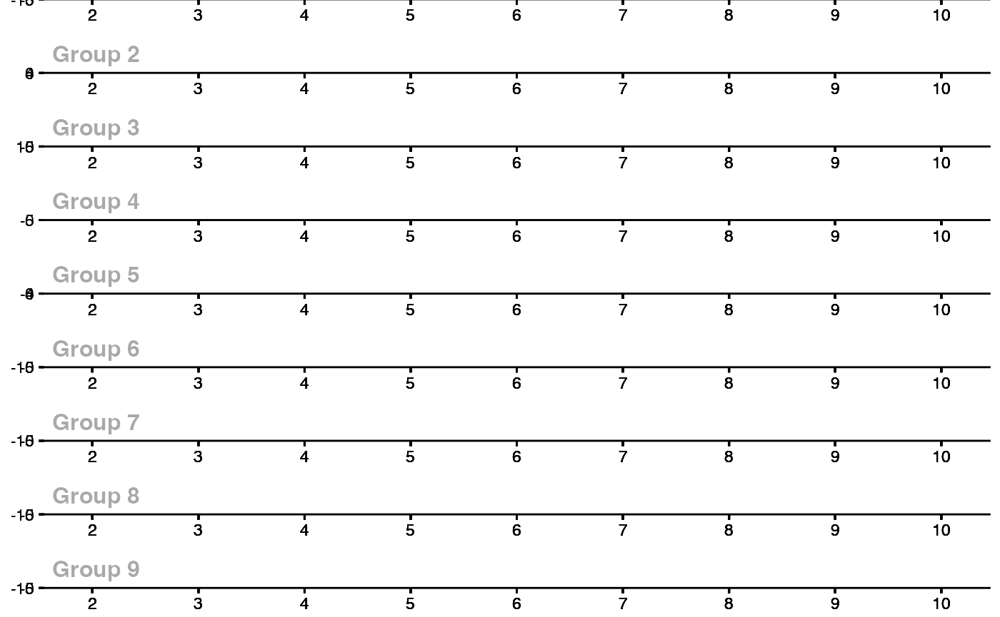
de Chaisemartin and D’Haultfoeuille (2020) with DIDmultiplegt
This approach provides an estimator that is robust to heterogeneous treatment effects in settings with multiple groups and periods. It avoids the “negative weighting” problem that can afflict TWFE estimators.
library(DIDmultiplegt)
# Using fixest::base_stagg with a binary treatment indicator
data(base_stagg, package = "fixest")
stagg_data <- base_stagg
stagg_data$treatment <- as.integer(stagg_data$year >= stagg_data$year_treated)
did_multiplegt(df = stagg_data, Y = "y", G = "id", T = "year", D = "treatment",
placebo = 2, dynamic = 2, brep = 50)Honest DiD (Rambachan and Roth, 2023)
The HonestDiD package provides sensitivity analysis tools to assess the robustness of DID estimates when the parallel trends assumption may be violated. It constructs confidence sets that remain valid under controlled departures from parallel trends.
library(HonestDiD)
library(fixest)
# Estimate event study with fixest using base_stagg
data(base_stagg, package = "fixest")
es_model <- feols(y ~ i(time_to_treatment, ref = c(-1, -1000)) | id + year, data = base_stagg)
# Extract pre/post period coefficients for HonestDiD
betahat <- coef(es_model)
sigma <- vcov(es_model)
# Determine number of pre and post periods from the coefficient names
coef_names <- names(betahat)
rel_times <- as.numeric(gsub(".*::(-?[0-9]+)$", "\\1", coef_names))
numPrePeriods <- sum(rel_times < 0)
numPostPeriods <- sum(rel_times >= 0)
# Sensitivity analysis under relative magnitudes restrictions
delta_rm_results <- createSensitivityResults_relativeMagnitudes(
betahat = betahat, sigma = sigma,
numPrePeriods = numPrePeriods, numPostPeriods = numPostPeriods,
Mbarvec = seq(0, 2, by = 0.5)
)
createSensitivityPlot_relativeMagnitudes(delta_rm_results)did2s: Two-Stage DID (Gardner, 2022)
The did2s package implements a two-stage estimator for DID designs. The first stage residualizes the outcome using unit and time fixed effects estimated from untreated observations, and the second stage estimates treatment effects from the residualized outcome.
library(did2s)
# Using fixest::base_stagg
data(base_stagg, package = "fixest")
base_stagg$treat <- as.integer(base_stagg$year >= base_stagg$year_treated)
es_did2s_res <- did2s(
data = base_stagg,
yname = "y",
first_stage = ~ 0 | id + year,
second_stage = ~ i(time_to_treatment, ref = -1),
treatment = "treat",
cluster_var = "id"
)
fixest::iplot(es_did2s_res)
Doubly Robust DID with DRDID
The DRDID package implements doubly robust estimators for the DID design. These estimators combine outcome regression and inverse probability weighting, providing consistent estimates if either the outcome model or the propensity score model is correctly specified.
library(DRDID)
# Create simulated panel data for DRDID
set.seed(42)
n <- 500
drdid_data <- data.frame(
id = rep(1:n, each = 2),
post = rep(c(0, 1), n),
treated = rep(sample(c(0, 1), n, replace = TRUE), each = 2)
)
drdid_data$x1 <- rnorm(nrow(drdid_data))
drdid_data$x2 <- rnorm(nrow(drdid_data))
drdid_data$y <- 1 + 0.5 * drdid_data$x1 + 0.3 * drdid_data$x2 +
2 * drdid_data$post + 1.5 * drdid_data$treated * drdid_data$post +
rnorm(nrow(drdid_data))
drdid_res <- drdid(
yname = "y", tname = "post", idname = "id",
dname = "treated", xformla = ~ x1 + x2,
data = drdid_data, panel = TRUE
)
summary(drdid_res)References
- Callaway, B. and Sant’Anna, P. H. C. (2021). “Difference-in-Differences with Multiple Time Periods.” Journal of Econometrics, 225(2), 200-230.
- de Chaisemartin, C. and D’Haultfoeuille, X. (2020). “Two-Way Fixed Effects Estimators with Heterogeneous Treatment Effects.” American Economic Review, 110(9), 2964-2996.
- Rambachan, A. and Roth, J. (2023). “A More Credible Approach to Parallel Trends.” Review of Economic Studies, 90(5), 2555-2591.
- Gardner, J. (2022). “Two-Stage Differences in Differences.” Working Paper.
- Sant’Anna, P. H. C. and Zhao, J. (2020). “Doubly Robust Difference-in-Differences Estimators.” Journal of Econometrics, 219(1), 101-122.
Modern DID Approaches
Callaway and Sant’Anna (2021) - Group-Time ATTs
The did package implements the estimator from Callaway and Sant’Anna (2021), which provides group-time average treatment effects that are robust to heterogeneous treatment effects with staggered adoption.
library(did)
# Using fixest::base_stagg for demonstration
data(base_stagg, package = "fixest")
# Group-time ATTs
cs_att <- att_gt(
yname = "y",
tname = "year",
idname = "id",
gname = "year_treated",
data = base_stagg,
control_group = "nevertreated"
)
#> Warning in att_gt(yname = "y", tname = "year", idname = "id", gname =
#> "year_treated", : Not returning pre-test Wald statistic due to singular
#> covariance matrix
# Summary
summary(cs_att)
#>
#> Call:
#> att_gt(yname = "y", tname = "year", idname = "id", gname = "year_treated",
#> data = base_stagg, control_group = "nevertreated")
#>
#> Reference: Callaway, Brantly and Pedro H.C. Sant'Anna. "Difference-in-Differences with Multiple Time Periods." Journal of Econometrics, Vol. 225, No. 2, pp. 200-230, 2021. <https://doi.org/10.1016/j.jeconom.2020.12.001>, <https://arxiv.org/abs/1803.09015>
#>
#> Group-Time Average Treatment Effects:
#> Group Time ATT(g,t) Std. Error [95% Simult. Conf. Band]
#> 2 2 -0.0620 1.1454 -3.1474 3.0234
#> 2 3 0.8025 1.4052 -2.9827 4.5877
#> 2 4 0.5652 0.6490 -1.1831 2.3135
#> 2 5 1.5055 0.9062 -0.9357 3.9467
#> 2 6 2.5619 0.9301 0.0564 5.0674 *
#> 2 7 4.0190 1.3552 0.3685 7.6694 *
#> 2 8 5.2139 1.0911 2.2749 8.1529 *
#> 2 9 4.8127 1.4744 0.8409 8.7845 *
#> 2 10 7.9529 0.9446 5.4083 10.4974 *
#> 3 2 -1.3460 1.5284 -5.4631 2.7711
#> 3 3 -1.3730 1.5377 -5.5151 2.7691
#> 3 4 -0.8442 1.7448 -5.5443 3.8560
#> 3 5 0.7506 1.0660 -2.1209 3.6220
#> 3 6 1.9911 1.2665 -1.4205 5.4028
#> 3 7 3.7285 1.6731 -0.7784 8.2353
#> 3 8 3.7314 2.4136 -2.7701 10.2330
#> 3 9 7.4758 3.0083 -0.6278 15.5794
#> 3 10 4.3601 3.0300 -3.8020 12.5222
#> 4 2 0.7299 1.4335 -3.1316 4.5914
#> 4 3 -0.9643 1.4065 -4.7530 2.8244
#> 4 4 -3.3764 1.1869 -6.5736 -0.1792 *
#> 4 5 -0.9700 0.9648 -3.5688 1.6289
#> 4 6 -0.0725 0.6106 -1.7174 1.5724
#> 4 7 2.5712 1.0888 -0.3617 5.5041
#> 4 8 3.4541 1.1486 0.3601 6.5481 *
#> 4 9 3.1764 1.5718 -1.0576 7.4104
#> 4 10 5.1465 1.3618 1.4782 8.8147 *
#> 5 2 -0.6639 0.6656 -2.4569 1.1290
#> 5 3 -0.2123 2.1195 -5.9218 5.4971
#> 5 4 2.1402 1.7880 -2.6761 6.9566
#> 5 5 -4.9388 1.2443 -8.2906 -1.5870 *
#> 5 6 -4.1322 0.8154 -6.3286 -1.9358 *
#> 5 7 -3.3633 1.5925 -7.6531 0.9264
#> 5 8 -3.1209 1.4172 -6.9386 0.6967
#> 5 9 -0.3087 1.4705 -4.2700 3.6526
#> 5 10 -1.3253 1.0875 -4.2547 1.6041
#> 6 2 3.5058 1.5893 -0.7754 7.7870
#> 6 3 -1.4542 1.4391 -5.3307 2.4222
#> 6 4 -0.1240 1.3134 -3.6620 3.4141
#> 6 5 -0.2167 1.4518 -4.1274 3.6941
#> 6 6 -4.7504 1.6847 -9.2885 -0.2123 *
#> 6 7 -5.2317 1.3232 -8.7962 -1.6672 *
#> 6 8 -4.0769 1.3872 -7.8137 -0.3401 *
#> 6 9 0.6196 1.2339 -2.7041 3.9433
#> 6 10 -2.2901 2.4490 -8.8871 4.3068
#> 7 2 1.7657 1.2512 -1.6049 5.1362
#> 7 3 -2.4189 1.0846 -5.3406 0.5028
#> 7 4 -0.2841 0.8428 -2.5543 1.9862
#> 7 5 -0.2590 1.3127 -3.7950 3.2770
#> 7 6 0.9715 1.1059 -2.0074 3.9504
#> 7 7 -6.0081 1.3921 -9.7581 -2.2581 *
#> 7 8 -4.8125 0.8231 -7.0296 -2.5954 *
#> 7 9 -4.3741 1.0643 -7.2411 -1.5071 *
#> 7 10 -3.2556 1.2405 -6.5972 0.0861
#> 8 2 -0.9745 1.2599 -4.3684 2.4194
#> 8 3 0.3279 1.1974 -2.8977 3.5534
#> 8 4 0.2493 1.1093 -2.7390 3.2375
#> 8 5 -0.5672 0.8670 -2.9027 1.7683
#> 8 6 2.1065 0.9657 -0.4949 4.7080
#> 8 7 -0.6701 0.8732 -3.0224 1.6822
#> 8 8 -6.1554 1.0307 -8.9317 -3.3790 *
#> 8 9 -3.5140 2.2275 -9.5143 2.4864
#> 8 10 -4.2912 2.6529 -11.4373 2.8550
#> 9 2 -0.0940 0.7104 -2.0076 1.8195
#> 9 3 0.9182 1.1003 -2.0458 3.8822
#> 9 4 -1.8170 1.3787 -5.5310 1.8969
#> 9 5 0.7218 0.8562 -1.5846 3.0282
#> 9 6 0.9655 1.0924 -1.9771 3.9081
#> 9 7 1.8153 1.2438 -1.5351 5.1658
#> 9 8 -0.8929 1.1845 -4.0836 2.2977
#> 9 9 -10.6718 1.7454 -15.3736 -5.9700 *
#> 9 10 -7.0655 1.2056 -10.3130 -3.8179 *
#> 10 2 -2.4592 1.9372 -7.6776 2.7591
#> 10 3 1.2612 1.2669 -2.1515 4.6739
#> 10 4 -1.0155 0.9168 -3.4851 1.4542
#> 10 5 -0.6638 1.4915 -4.6814 3.3538
#> 10 6 1.5085 1.0184 -1.2346 4.2517
#> 10 7 1.2393 0.8804 -1.1321 3.6108
#> 10 8 -1.2615 1.5914 -5.5483 3.0252
#> 10 9 -0.9524 1.4116 -4.7550 2.8503
#> 10 10 -8.0378 0.6602 -9.8162 -6.2594 *
#> ---
#> Signif. codes: `*' confidence band does not cover 0
#>
#> Control Group: Never Treated, Anticipation Periods: 0
#> Estimation Method: Doubly Robust
# Aggregate to overall ATT
agg_att <- aggte(cs_att, type = "simple")
summary(agg_att)
#>
#> Call:
#> aggte(MP = cs_att, type = "simple")
#>
#> Reference: Callaway, Brantly and Pedro H.C. Sant'Anna. "Difference-in-Differences with Multiple Time Periods." Journal of Econometrics, Vol. 225, No. 2, pp. 200-230, 2021. <https://doi.org/10.1016/j.jeconom.2020.12.001>, <https://arxiv.org/abs/1803.09015>
#>
#>
#> ATT Std. Error [ 95% Conf. Int.]
#> -0.7552 0.6975 -2.1222 0.6118
#>
#>
#> ---
#> Signif. codes: `*' confidence band does not cover 0
#>
#> Control Group: Never Treated, Anticipation Periods: 0
#> Estimation Method: Doubly Robust
# Dynamic/event-study aggregation
agg_es <- aggte(cs_att, type = "dynamic")
ggdid(agg_es)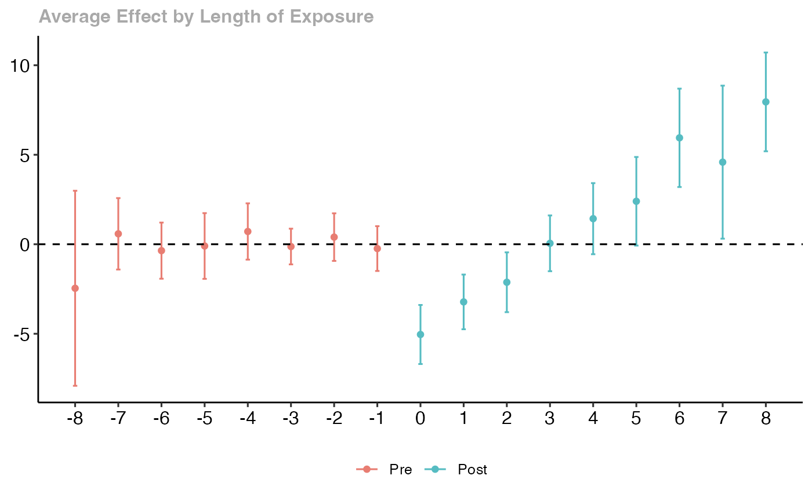
# Group-specific aggregation
agg_group <- aggte(cs_att, type = "group")
ggdid(agg_group)
#> `height` was translated to `width`.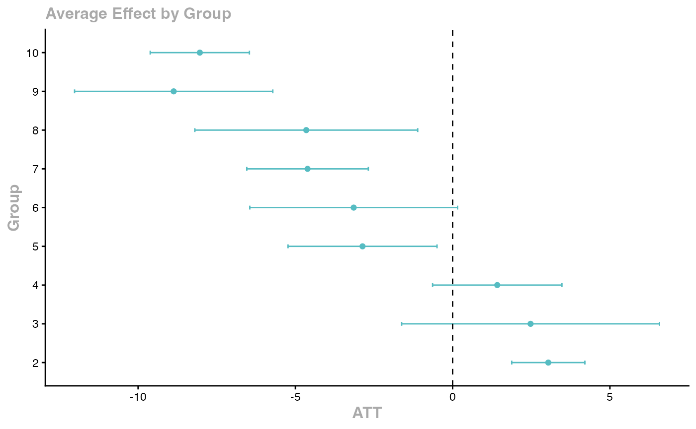

Key features: - Handles staggered treatment timing - Robust to heterogeneous treatment effects - Multiple aggregation schemes - Built-in event study plots
de Chaisemartin and D’Haultfoeuille (2020)
The Two-Way Fixed Effects (TWFE) estimator can be severely biased when treatment effects are heterogeneous across groups and time. The DIDmultiplegt package provides alternative estimators.
library(DIDmultiplegt)
# Using fixest::base_stagg
data(base_stagg, package = "fixest")
stagg_data2 <- base_stagg
stagg_data2$treatment <- as.integer(stagg_data2$year >= stagg_data2$year_treated)
did_multiplegt(df = stagg_data2, Y = "y", G = "id", T = "year", D = "treatment",
placebo = 3, dynamic = 3, brep = 100)Gardner (2022) Two-Stage DID with did2s
The two-stage approach first residualizes the outcome using untreated observations, then estimates the treatment effect.
library(did2s)
# Using fixest::base_stagg
data(base_stagg, package = "fixest")
base_stagg$treated <- as.integer(base_stagg$year >= base_stagg$year_treated)
# Two-stage DID
es_did2s <- did2s(
data = base_stagg,
yname = "y",
first_stage = ~ 0 | id + year,
second_stage = ~ i(time_to_treatment, ref = -1),
treatment = "treated",
cluster_var = "id"
)
fixest::iplot(es_did2s)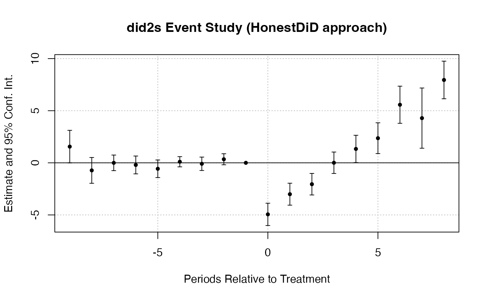
Imputation Estimator (Borusyak, Jaravel, Spiess 2024)
library(didimputation)
# Using fixest::base_stagg
data(base_stagg, package = "fixest")
did_imputation(
data = base_stagg, yname = "y", gname = "year_treated",
tname = "year", idname = "id",
first_stage = ~ 0 | id + year
)
#> term estimate std.error conf.low conf.high
#> <char> <num> <num> <num> <num>
#> 1: treat -0.7455638 0.3302853 -1.392923 -0.09820456Doubly Robust DID with DRDID
Sant’Anna and Zhao (2020) propose doubly robust estimators that combine outcome regression with propensity score weighting for improved robustness.
library(DRDID)
# Create simulated panel data for DRDID
set.seed(123)
n_units <- 500
drdid_panel <- data.frame(
id = rep(1:n_units, each = 2),
post = rep(c(0, 1), n_units),
treated = rep(sample(c(0, 1), n_units, replace = TRUE), each = 2)
)
drdid_panel$x1 <- rnorm(nrow(drdid_panel))
drdid_panel$x2 <- rnorm(nrow(drdid_panel))
drdid_panel$y <- 1 + 0.5 * drdid_panel$x1 + 0.3 * drdid_panel$x2 +
2 * drdid_panel$post + 1.5 * drdid_panel$treated * drdid_panel$post +
rnorm(nrow(drdid_panel))
# Doubly robust DID for panel data
drdid_rc <- drdid(
yname = "y", tname = "post", idname = "id",
dname = "treated", xformla = ~ x1 + x2,
data = drdid_panel, panel = TRUE
)
summary(drdid_rc)Sensitivity Analysis for Parallel Trends with HonestDiD
Rambachan and Roth (2023) provide tools to assess the sensitivity of DID estimates to potential violations of the parallel trends assumption.
library(HonestDiD)
library(fixest)
# Estimate an event study with fixest using base_stagg
data(base_stagg, package = "fixest")
es_model2 <- feols(y ~ i(time_to_treatment, ref = c(-1, -1000)) | id + year, data = base_stagg)
# Extract coefficients and variance-covariance matrix
betahat2 <- coef(es_model2)
sigma2 <- vcov(es_model2)
# Determine number of pre and post periods
coef_names2 <- names(betahat2)
rel_times2 <- as.numeric(gsub(".*::(-?[0-9]+)$", "\\1", coef_names2))
numPrePeriods2 <- sum(rel_times2 < 0)
numPostPeriods2 <- sum(rel_times2 >= 0)
# Sensitivity analysis under smoothness restrictions
delta_rm_results2 <- createSensitivityResults_relativeMagnitudes(
betahat = betahat2, sigma = sigma2,
numPrePeriods = numPrePeriods2, numPostPeriods = numPostPeriods2,
Mbarvec = seq(0, 2, by = 0.5)
)
createSensitivityPlot_relativeMagnitudes(delta_rm_results2)Choosing Among Modern DID Estimators
| Method | Best For | Key Package |
|---|---|---|
| TWFE (fixest) | Homogeneous effects, no staggering | fixest |
| Callaway & Sant’Anna | Staggered adoption, group-time effects | did |
| Sun & Abraham | Event study with staggered adoption | fixest::sunab() |
| Gardner 2-stage | Clean separation of first/second stage | did2s |
| Imputation | Large panels, computational efficiency | didimputation |
| Doubly robust | Covariate adjustment with robustness | DRDID |
| Stacked DID | Flexible, works with any estimator | causalverse::stack_data() |
| SynthDID | Few treated units, SC-like weighting | causalverse::synthdid_est_ate() |
Bacon Decomposition with bacondecomp
Goodman-Bacon (2021) shows that the TWFE DID estimator is a weighted average of all possible 2x2 DID estimates in the data. The bacondecomp package decomposes the TWFE estimate to reveal which comparisons drive the result and whether problematic comparisons (e.g., already-treated vs. later-treated) receive substantial weight.
library(bacondecomp)
library(fixest)
# Prepare staggered data
set.seed(42)
data(base_stagg, package = "fixest")
bacon_data <- base_stagg |>
dplyr::mutate(
treated = dplyr::if_else(year >= year_treated, 1, 0),
treated = dplyr::if_else(is.na(year_treated) | year_treated > max(year), 0, treated)
)
# Bacon decomposition
bacon_out <- bacon(
y ~ treated,
data = bacon_data,
id_var = "id",
time_var = "year"
)
# Inspect the decomposition table
print(bacon_out)
# Weighted average across all 2x2 comparisons
coef_bacon <- sum(bacon_out$estimate * bacon_out$weight)
cat("Bacon-weighted TWFE estimate:", round(coef_bacon, 4), "\n")
# Visualize the decomposition
# Each point is a 2x2 DID; size proportional to weight
ggplot(bacon_out, aes(x = weight, y = estimate, color = type, shape = type)) +
geom_point(size = 3) +
geom_hline(yintercept = coef_bacon, linetype = "dashed") +
labs(
title = "Goodman-Bacon Decomposition of TWFE",
x = "Weight", y = "2x2 DID Estimate",
color = "Comparison Type", shape = "Comparison Type"
) +
causalverse::ama_theme()The decomposition reveals whether the TWFE estimate is driven by clean (treated vs. never-treated) comparisons or problematic (already-treated vs. later-treated) ones. Large weights on problematic comparisons signal potential bias from heterogeneous treatment effects.
TWFE Diagnostic Weights with TwoWayFEWeights
de Chaisemartin and D’Haultfoeuille (2020) show that TWFE regressions assign implicit weights to group-time ATTs, and some of these weights can be negative. Negative weights mean that even if all group-time treatment effects are positive, the TWFE estimate could be negative or zero.
library(TwoWayFEWeights)
library(fixest)
# Prepare staggered data
set.seed(42)
data(base_stagg, package = "fixest")
twfe_data <- base_stagg |>
dplyr::mutate(
treated = dplyr::if_else(year >= year_treated, 1, 0),
treated = dplyr::if_else(is.na(year_treated) | year_treated > max(year), 0, treated)
)
# Compute the weights attached to each group-time ATT
twfe_wts <- twowayfeweights(
df = twfe_data,
Y = "y",
G = "id",
T = "year",
D = "treated",
type = "feTR"
)
# Summary: number of positive and negative weights
print(twfe_wts)If the diagnostic finds negative weights, researchers should consider using one of the heterogeneity-robust estimators (e.g., Callaway-Sant’Anna, de Chaisemartin-D’Haultfoeuille, or imputation) rather than relying on the standard TWFE specification.
Fast Staggered DID with fastdid
The fastdid package provides a performance-optimized implementation of the Callaway and Sant’Anna (2021) estimator. It is designed for large-scale panel datasets where the original did package may be computationally expensive.
library(fastdid)
# Simulate a large staggered adoption dataset
set.seed(42)
n_units <- 2000
n_years <- 10
fastdid_data <- data.table::CJ(id = 1:n_units, year = 2001:(2000 + n_years))
fastdid_data[, cohort := sample(c(2004, 2006, 2008, Inf), n_units, replace = TRUE)[id]]
fastdid_data[, treat := as.integer(year >= cohort)]
fastdid_data[, y := 1 + 0.5 * (year - 2000) + 2 * treat * (year - cohort + 1) * (treat == 1) + rnorm(.N)]
# Fast estimation of group-time ATTs
fastdid_result <- fastdid(
data = fastdid_data,
yname = "y",
gname = "cohort",
tname = "year",
idname = "id"
)
print(fastdid_result)fastdid is particularly useful when working with administrative datasets or large panels where computation time for did::att_gt() becomes prohibitive.
Fixed Effects Counterfactual with fect
The fect package implements the fixed effects counterfactual estimator (Liu, Wang, and Xu, 2024), which subsumes and extends the generalized synthetic control method (gsynth). It supports interactive fixed effects (IFE), matrix completion (MC), and standard TWFE approaches to construct counterfactuals for treated units.
library(fect)
# Simulate panel data with staggered treatment
set.seed(42)
n_units <- 50
n_periods <- 20
fect_data <- expand.grid(id = 1:n_units, time = 1:n_periods)
fect_data$treat_start <- ifelse(fect_data$id <= 25,
sample(10:15, 25, replace = TRUE)[fect_data$id], Inf)
fect_data$D <- as.integer(fect_data$time >= fect_data$treat_start)
# Factor structure + treatment effect
fect_data$f1 <- sin(2 * pi * fect_data$time / n_periods)
fect_data$lambda1 <- fect_data$id / n_units
fect_data$y <- 2 + fect_data$f1 * fect_data$lambda1 +
3 * fect_data$D * pmax(fect_data$time - fect_data$treat_start + 1, 0) / 5 +
rnorm(nrow(fect_data))
# Interactive fixed effects counterfactual estimator
fect_out <- fect(
formula = y ~ D,
data = fect_data,
index = c("id", "time"),
method = "ife", # "ife", "mc", or "fe"
force = "two-way",
r = 2, # number of factors
se = TRUE,
nboots = 200,
parallel = FALSE
)
# Summary and plot
print(fect_out)
#> Call:
#> fect.formula(formula = y ~ D, data = fect_data, index = c("id",
#> "time"), force = "two-way", r = 2, method = "ife", se = TRUE,
#> nboots = 200, parallel = FALSE)
#>
#> ATT:
#> ATT S.E. CI.lower CI.upper p.value
#> Tr obs equally weighted 3.681 0.4461 2.807 4.556 2.220e-16
#> Tr units equally weighted 3.594 0.4627 2.687 4.501 7.994e-15
plot(fect_out, main = "ATT Estimates (IFE Method)")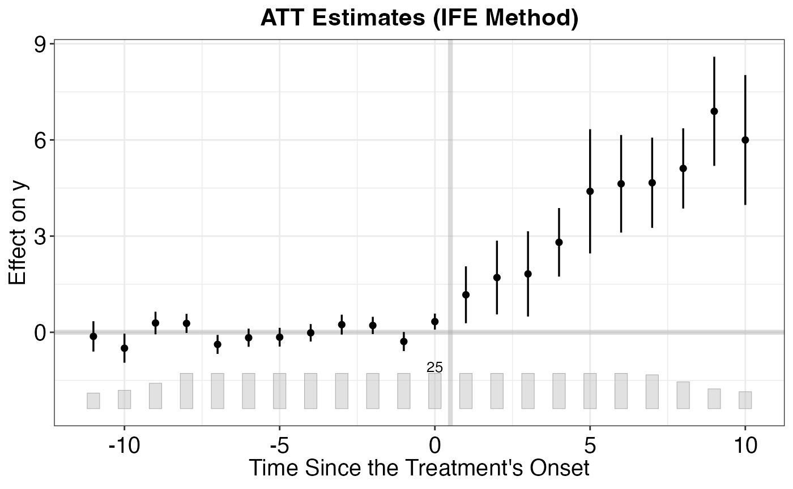
# Placebo test: pre-treatment fit
plot(fect_out, type = "equiv",
main = "Equivalence Test for Pre-treatment Periods")
Key advantages of fect:
- Accommodates unobserved interactive fixed effects beyond additive unit and time FEs
- Built-in equivalence tests for pre-treatment fit
- Handles unbalanced panels and staggered adoption
- Subsumes
gsynthfunctionality with additional methods (matrix completion, TWFE)
Panel Data Visualization with panelView
The panelView package provides diagnostic visualizations for panel data, helping researchers understand treatment assignment patterns, missing data, and outcome dynamics before running any DID analysis.
library(panelView)
# Prepare staggered treatment data
set.seed(42)
data(base_stagg, package = "fixest")
pv_data <- base_stagg |>
dplyr::mutate(
D = dplyr::if_else(year >= year_treated, 1, 0),
D = dplyr::if_else(is.na(year_treated) | year_treated > max(year), 0, D)
)
# Treatment status plot: visualize when each unit is treated
panelview(
y ~ D, data = pv_data,
index = c("id", "year"),
xlab = "Year", ylab = "Unit",
main = "Treatment Status Over Time",
by.timing = TRUE
)
#> Warning in fortify(data, ...): Arguments in `...` must be used.
#> ✖ Problematic argument:
#> • position = "identity"
#> ℹ Did you misspell an argument name?
#> Warning: In `margin()`, the argument `t` should have length 1, not length 4.
#> ℹ Argument get(s) truncated to length 1.
#> Warning: The `size` argument of `element_rect()` is deprecated as of ggplot2 3.4.0.
#> ℹ Please use the `linewidth` argument instead.
#> ℹ The deprecated feature was likely used in the panelView package.
#> Please report the issue to the authors.
#> This warning is displayed once per session.
#> Call `lifecycle::last_lifecycle_warnings()` to see where this warning was
#> generated.
# Outcome trajectories by treatment timing
panelview(
y ~ D, data = pv_data,
index = c("id", "year"),
type = "outcome",
main = "Outcome Trajectories by Group",
by.group = TRUE
)
#> Warning in panelview(y ~ D, data = pv_data, index = c("id", "year"), type =
#> "outcome", : option "by.cohort" is not allowed with "by.group = TRUE" or
#> "by.group.side = TRUE". Ignored.
panelView is useful as a first step in any DID analysis: it helps detect issues like unbalanced panels, unusual treatment patterns, or pre-treatment outcome divergence that may violate parallel trends assumptions.
DIDHAD - Heterogeneous Adoption Designs
de Chaisemartin and D’Haultfoeuille (2024) propose a DID estimator for settings with heterogeneous adoption dates and no true control group (all units eventually get treated). The DIDHAD package estimates treatment effects using quasi-untreated groups formed by not-yet-treated units.
library(DIDHAD)
# Simulate data where all units eventually receive treatment
set.seed(42)
n <- 200
n_t <- 12
didhad_data <- expand.grid(unit = 1:n, time = 1:n_t)
didhad_data$cohort <- sample(4:9, n, replace = TRUE)[didhad_data$unit]
didhad_data$D <- as.integer(didhad_data$time >= didhad_data$cohort)
didhad_data$y <- 1 + 0.3 * didhad_data$time +
2.5 * didhad_data$D +
rnorm(nrow(didhad_data))
# Estimate treatment effect with DIDHAD
didhad_out <- did_had(
df = didhad_data,
outcome = "y",
treatment = "D",
group = "unit",
time = "time"
)
print(didhad_out)DIDHAD is particularly useful in settings where a never-treated control group does not exist, such as policy rollouts that eventually cover all jurisdictions.
Staggered Treatment Timing with staggered
Roth and Sant’Anna (2023) propose an efficient estimator for staggered DID designs that achieves the semiparametric efficiency bound under a random treatment timing assumption. The staggered package also implements estimators from Callaway-Sant’Anna and Sun-Abraham within the same framework.
library(staggered)
# Prepare staggered adoption data
set.seed(42)
data(base_stagg, package = "fixest")
stagg_df <- base_stagg |>
dplyr::mutate(
g = dplyr::if_else(is.na(year_treated) | year_treated > max(year), Inf, year_treated)
)
# Efficient estimator (Roth & Sant'Anna 2023)
stag_simple <- staggered(
df = stagg_df,
i = "id",
t = "year",
g = "g",
y = "y",
estimand = "simple"
)
print(stag_simple)
#> estimate se se_neyman
#> 1 -0.7110941 0.2211943 0.2214245
# Event-study estimates
stag_es <- staggered(
df = stagg_df,
i = "id",
t = "year",
g = "g",
y = "y",
estimand = "eventstudy",
eventTime = -5:5
)
print(stag_es)
#> estimate se se_neyman eventTime
#> 1 -0.35366088 0.2090569 0.2102740 -5
#> 2 0.06690767 0.2000045 0.2154505 -4
#> 3 -0.11942669 0.3453901 0.3467149 -3
#> 4 0.29184190 0.2746988 0.2805900 -2
#> 5 0.00000000 0.0000000 0.0000000 -1
#> 6 -4.93001214 0.3344306 0.3348525 0
#> 7 -3.04335795 0.3530144 0.3622437 1
#> 8 -2.10637558 0.4023982 0.4061635 2
#> 9 0.01308680 0.3558649 0.3558659 3
#> 10 1.38467402 0.3572501 0.3632447 4
#> 11 2.35730328 0.5927689 0.5933399 5
# Compare with Callaway-Sant'Anna within same framework
stag_cs <- staggered_cs(
df = stagg_df,
i = "id",
t = "year",
g = "g",
y = "y",
estimand = "simple"
)
cat("Efficient estimator:", round(stag_simple$estimate, 4),
"(SE:", round(stag_simple$se, 4), ")\n")
#> Efficient estimator: -0.7111 (SE: 0.2212 )
cat("Callaway-Sant'Anna:", round(stag_cs$estimate, 4),
"(SE:", round(stag_cs$se, 4), ")\n")
#> Callaway-Sant'Anna: -0.7995 (SE: 0.4485 )The staggered package is ideal when treatment timing can be assumed to be as-good-as-random (e.g., staggered policy rollouts), as the efficient estimator can offer meaningful precision gains over other robust DID estimators.
References
- Callaway, B. and Sant’Anna, P. H. C. (2021). “Difference-in-Differences with Multiple Time Periods.” Journal of Econometrics, 225(2), 200-230.
- de Chaisemartin, C. and D’Haultfoeuille, X. (2020). “Two-Way Fixed Effects Estimators with Heterogeneous Treatment Effects.” American Economic Review, 110(9), 2964-2996.
- de Chaisemartin, C. and D’Haultfoeuille, X. (2024). “Difference-in-Differences Estimators of Intertemporal Treatment Effects.” Review of Economics and Statistics, forthcoming.
- Gardner, J. (2022). “Two-Stage Differences in Differences.” Working Paper.
- Goodman-Bacon, A. (2021). “Difference-in-Differences with Variation in Treatment Timing.” Journal of Econometrics, 225(2), 254-277.
- Liu, L., Wang, Y., and Xu, Y. (2024). “A Practical Guide to Counterfactual Estimators for Causal Inference with Time-Series Cross-Sectional Data.” American Journal of Political Science, 68(1), 160-176.
- Borusyak, K., Jaravel, X., and Spiess, J. (2024). “Revisiting Event-Study Designs: Robust and Efficient Estimation.” Review of Economic Studies, 91(6), 3253-3285.
- Roth, J. and Sant’Anna, P. H. C. (2023). “Efficient Estimation for Staggered Rollout Designs.” Journal of Political Economy Microeconomics, 1(4), 669-709.
- Sant’Anna, P. H. C. and Zhao, J. (2020). “Doubly Robust Difference-in-Differences Estimators.” Journal of Econometrics, 219(1), 101-122.
- Rambachan, A. and Roth, J. (2023). “A More Credible Approach to Parallel Trends.” Review of Economic Studies, 90(5), 2555-2591.
- Sun, L. and Abraham, S. (2021). “Estimating Dynamic Treatment Effects in Event Studies with Heterogeneous Treatment Effects.” Journal of Econometrics, 225(2), 175-199.